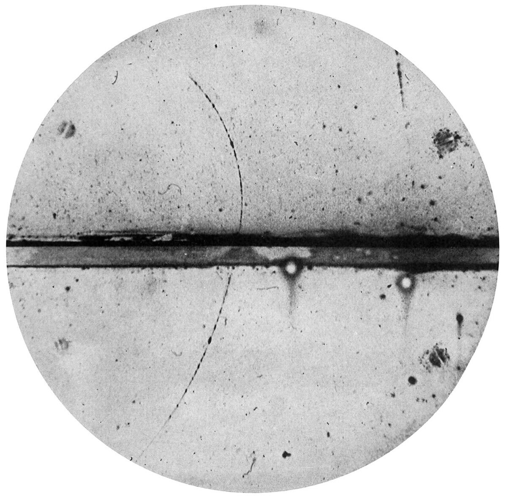
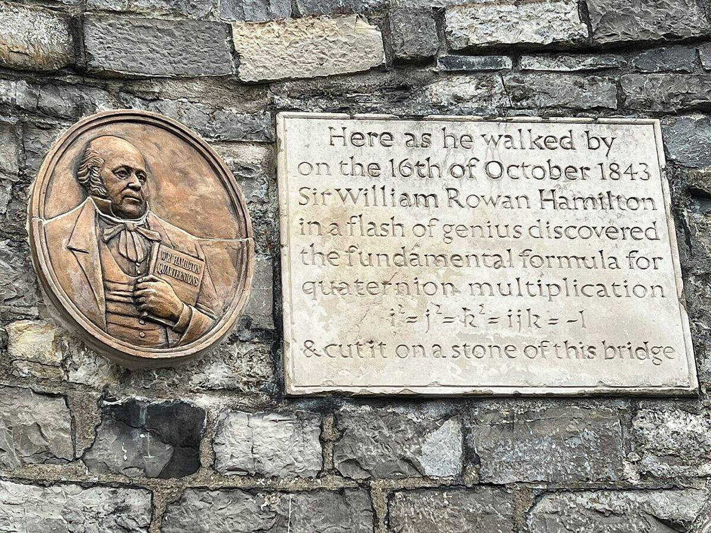
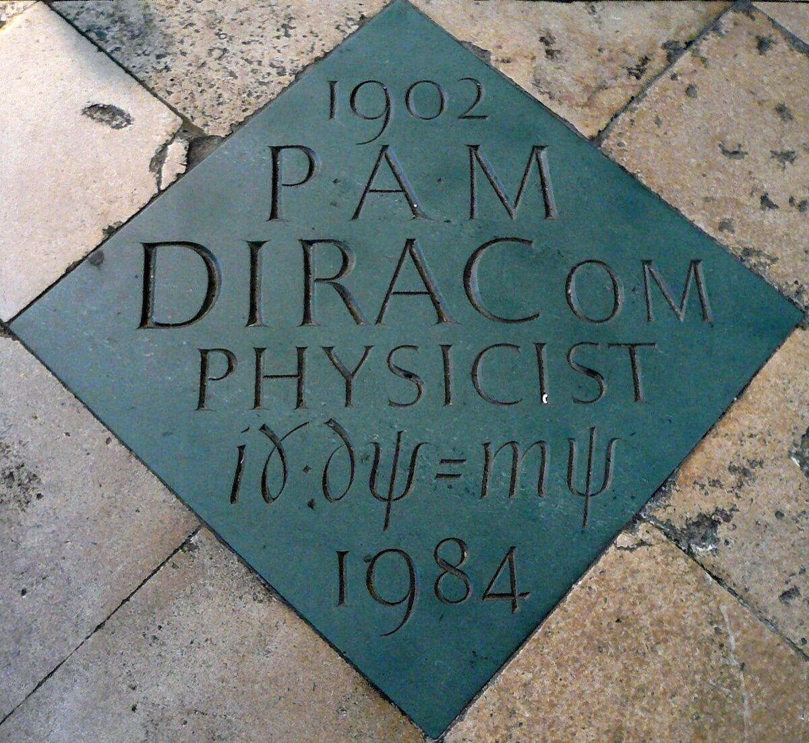

Prolog
Antimaterie im Krankenhaus
Wer sich in einer Klinik einer PET-Untersuchung unterzieht, bekommt vorher eine schwach radioaktive Zuckerlösung gespritzt. Der Zucker ist mit dem Isotop Fluor-18 markiert, das in einem Zyklotron hergestellt wird und eine Halbwertszeit von knapp zwei Stunden hat. Im Körper reichert sich die Lösung dort an, wo viel Zucker verbraucht wird – in arbeitenden Hirnarealen, im Herzmuskel, in schnell wachsenden Tumoren. Und dort, im Gewebe des Patienten, geschieht etwas Bemerkenswertes: Beim Zerfall eines Fluor-18-Kerns entsteht ein Positron, ein Teilchen Antimaterie. Es legt im Mittel weniger als einen Millimeter zurück, trifft auf ein Elektron, und beide verschwinden. Übrig bleiben zwei Lichtquanten mit je 511 Kiloelektronenvolt Energie, die in entgegengesetzte Richtungen davonfliegen. Der Detektorring des Scanners registriert sie gleichzeitig, und aus Millionen solcher Paare setzt ein Rechner das Bild zusammen.
_at_the_National_Naval_Medical_Center_in_Bethesda,_Maryland.jpg){kind=link}
Dass es Antimaterie gibt, wurde 1931 vorhergesagt, bevor irgendjemand sie gesehen hatte. Die Vorhersage stammt nicht aus einem Experiment, sondern aus einer Gleichung, die der damals 25-jährige Paul Dirac im Januar 1928 aufgeschrieben hatte. Er suchte eine Gleichung für das Elektron, die sowohl der Quantenmechanik als auch Einsteins Relativitätstheorie genügt, und stieß dabei auf ein mathematisches Problem: Er musste eine Wurzel ziehen, die sich mit gewöhnlichen Zahlen nicht ziehen lässt. Die Lösung, die er fand, passt in eine Zeile:
Aus dieser Zeile folgten drei Dinge, die niemand bestellt hatte. Erstens trägt das Elektron einen inneren Drehimpuls, den Spin, der zuvor nur experimentell bekannt war und von Hand in die Theorie eingebaut werden musste. Zweitens hat dieser Spin eine Eigenschaft, die jeder Anschauung zu widersprechen scheint: Ein Elektron muss sich zweimal um sich selbst drehen, um wieder in seinem Ausgangszustand zu sein. Drittens hat die Gleichung zu jeder Lösung mit positiver Energie eine zweite mit negativer – und Dirac kam nach einigen Irrwegen zu dem Schluss, dass diese zweite Lösung ein Teilchen mit der Masse des Elektrons, aber entgegengesetzter Ladung beschreibt.


Am 2. August 1932 fotografierte Carl Anderson am California Institute of Technology in einer Nebelkammer die Spur eines solchen Teilchens. Diracs Theorie war ihm bekannt, spielte bei der Entdeckung aber keine Rolle; er war auf die Spur gestoßen, als er kosmische Strahlung untersuchte. 1933 erhielt Dirac den Nobelpreis, 1936 Anderson. Heute wird das Positron jeden Tag in Kliniken auf der ganzen Welt genutzt.
Dieser Beitrag führt zu Diracs Zeile, ohne dass ein Physikstudium vorausgesetzt wird. Benötigt werden Vektoren, Matrizen und Schulmathematik. Das Ziel ist dabei mehr als eine Nacherzählung: Jedes Symbol der Gleichung soll im Verlauf des Textes verdient werden, das heißt, es soll klar werden, warum es dort steht und warum es nicht anders aussehen kann. Die Leiste am oberen Rand zeigt, welche Symbole bereits verdient sind.
Der Weg hat drei Akte, und jeder beantwortet eine Frage.
- Akt I · Geometrie. Gibt es ein Produkt von Vektoren, das nichts wegwirft? Die Antwort führt auf orientierte Flächen, auf die imaginäre Einheit als Drehung und auf einen merkwürdigen halben Winkel.
- Akt II · Quantenmechanik. Was tut die Natur zwischen zwei Messungen? Die Antwort lautet: Sie dreht Zeiger und addiert sie, und Matrixmultiplikation erweist sich als genau das: das Aufsummieren aller Möglichkeiten eines Schritts.
- Akt III · Relativität. Wie zieht man die Wurzel aus \(E^2 = p^2c^2 + m^2c^4\)? Die Antwort liefert die Geometrie aus Akt I, und aus ihr folgen Spin, Antimaterie und ein überraschend anschauliches Bild der Masse.
Der rote Faden, der die drei Akte verbindet, ist die Drehung.
Akt I · Geometrie
Multiplizieren kann drehen
Leitfrage: Gibt es ein Produkt von Vektoren, das nichts wegwirft?
Abschnitt 1
Vektoren lassen sich nicht teilen
Mit Zahlen lässt sich eine Frage beantworten, die so selbstverständlich ist, dass sie kaum auffällt: Womit muss man 3 multiplizieren, um 6 zu erhalten? Die Antwort ist \(6/3 = 2\), und sie existiert, weil man durch jede Zahl außer null teilen kann. Dieselbe Frage lässt sich für Pfeile stellen. Gegeben seien zwei Vektoren \(u\) und \(v\) in der Ebene. Mit welchem Objekt muss man \(u\) multiplizieren, damit \(v\) herauskommt? Anschaulich ist die Antwort klar: Man muss \(u\) auf die Länge von \(v\) strecken und in die Richtung von \(v\) drehen. Es gibt also eine wohldefinierte Operation, die \(u\) in \(v\) überführt – eine Drehstreckung. Die Frage ist nur, ob man sie als Quotient \(u^{-1}v\) schreiben kann, so wie man bei Zahlen \(6/3\) schreibt.
Die Schulmathematik kennt zwei Produkte von Vektoren, und beide scheitern an dieser Frage. Das Skalarprodukt \(u\cdot v = |u|\,|v|\cos\theta\) macht aus zwei Vektoren eine einzelne Zahl. Dabei geht Information verloren: Unendlich viele Vektoren \(v\) haben mit \(u\) dasselbe Skalarprodukt, und aus der Zahl allein lässt sich nicht zurückrechnen, welcher es war. Das Kreuzprodukt \(u \times v\) liefert zwar wieder einen Vektor, hat aber gleich drei Mängel: Es existiert nur im dreidimensionalen Raum, es ist nicht assoziativ, das heißt \((u\times v)\times w\) und \(u \times (v \times w)\) sind im Allgemeinen verschieden, und es ist ebenfalls nicht umkehrbar, denn alle Vektoren \(v + \lambda u\) liefern mit \(u\) dasselbe Kreuzprodukt.
Ausprobieren: Ziehe an den Spitzen von \(u\) und \(v\). Schritt 1 zeigt alle Vektoren, die mit \(u\) dasselbe Skalarprodukt haben, Schritt 2 alle, die mit \(u\) dieselbe Fläche aufspannen. Schritt 3 legt beide übereinander.
Das Experiment zeigt zweierlei. Erstens wirft jedes der beiden Maße für sich genau die Information weg, die das andere enthält: Das Skalarprodukt misst, wie weit \(v\) in Richtung \(u\) reicht, und vergisst, wie weit \(v\) seitlich davon abweicht; die Fläche misst die seitliche Abweichung und vergisst den Anteil entlang \(u\). Zweitens legen beide zusammen den Vektor \(v\) eindeutig fest. Dies bedeutet, dass in der Kombination aus Skalarprodukt und Fläche alles steckt, was \(v\) relativ zu \(u\) ausmacht.
Damit ist allerdings noch nichts bewiesen, sondern nur ein Verdacht begründet. Man könnte die beiden Zahlen einfach als Paar notieren und das Paar zum „Produkt“ erklären – das wäre genau die Art willkürlicher Setzung, die hier vermieden werden soll. Die folgenden zwei Abschnitte gehen deshalb anders vor. Sie fragen nicht, welches Produkt man gerne hätte, sondern welche Mindestanforderungen jedes Produkt erfüllen muss, mit dem man überhaupt rechnen kann, und leiten dann ab, was aus diesen Anforderungen zwangsläufig folgt. Skalarprodukt und Fläche werden dabei nicht eingeführt. Sie fallen heraus.
Wie in diesem Beitrag Begründungen markiert sind
Jeder Schritt dieses Beitrags ist von einer von drei Sorten, und an den entscheidenden Stellen steht ein kleines Etikett davor:
folgt zwingend Der Schritt ergibt sich logisch aus dem, was vorher gesagt wurde. Eine andere Wahl gibt es nicht.
Eingabe Hier wird etwas hineingesteckt – eine Forderung oder eine experimentelle Tatsache. Zu jeder Eingabe wird begründet, warum gerade diese.
Konvention Hier darf gewählt werden, und eine andere Wahl wäre genauso gut. Solche Stellen werden ausdrücklich als Konvention benannt.
Am Ende des Beitrags zieht der Epilog Bilanz: wie wenige Eingaben nötig waren und wie viel aus ihnen zwangsläufig folgte.
Abschnitt 2
Zwei Forderungen – und das Skalarprodukt fällt heraus
Gesucht ist ein Produkt \(uv\) von Vektoren, mit dem man rechnen kann wie mit Zahlen. An dieses Produkt werden genau zwei Forderungen gestellt.
Eingabe Erstens: Klammern und Ausmultiplizieren. Das Produkt soll assoziativ sein, \((uv)w = u(vw)\), und distributiv, \(u(v+w) = uv + uw\). Diese beiden Regeln sind keine Geschmacksfrage. Ohne Assoziativität darf man in einem Produkt aus drei Faktoren keine Klammer verschieben, ohne Distributivität keinen Term ausmultiplizieren – und ohne diese beiden Handgriffe lässt sich keine einzige Gleichung umformen. Bemerkenswert ist, was nicht gefordert wird: dass \(uv = vu\) gilt. Ob das Produkt kommutativ ist, bleibt offen; es wird sich in Abschnitt 3 zeigen, dass es das gar nicht sein kann.
Eingabe Zweitens: Ein Vektor mal sich selbst ergibt sein Längenquadrat.
Dies ist die einzige Stelle, an der die Geometrie in die Rechnung eingeht, und deshalb verdient sie eine Begründung. Bei Zahlen ist \(3 \cdot 3 = 9\) der Flächeninhalt eines Quadrats mit Seitenlänge 3; das Quadrieren ist der Punkt, an dem Multiplikation und Länge zusammenhängen. Verlangt man dasselbe von Vektoren, so ist das Produkt an das Messen von Längen gebunden – andernfalls hätte es mit der Geometrie der Pfeile nichts zu tun. Der Ehrlichkeit halber sei angemerkt, dass man auch \(vv = -|v|^2\) fordern könnte; das ergibt eine andere, ebenso widerspruchsfreie Algebra. Diese Vorzeichenfreiheit ist kein Makel, sondern wird im dritten Akt eine entscheidende Rolle spielen: Dort wird die Physik festlegen, welches Vorzeichen für Raum und welches für Zeit gilt.
folgt zwingend Aus diesen zwei Forderungen folgt bereits das Skalarprodukt. Dazu wird die zweite Forderung auf den Summenvektor \(u + v\) angewandt und das Produkt mit der ersten Forderung ausmultipliziert:
Umgestellt ergibt sich
Die rechte Seite ist eine reine Zahl, und zwar eine bekannte. Nach dem Kosinussatz ist \(|u+v|^2 = |u|^2 + |v|^2 + 2|u|\,|v|\cos\theta\), also steht rechts \(2|u|\,|v|\cos\theta = 2\,u\cdot v\). Damit gilt
Dies bedeutet anschaulich: Der Anteil von \(uv\), der beim Vertauschen der Faktoren gleich bleibt, ist nichts Neues, sondern das vertraute Skalarprodukt. Es wurde nicht definiert und nicht eingeführt, sondern ist eine Folge der Forderung, dass Quadrieren Längen misst. Damit ist allerdings erst die Hälfte des Produkts verstanden. Die andere Hälfte ist der Anteil, der beim Vertauschen sein Vorzeichen wechselt – und er führt auf ein Objekt, das in der Schulmathematik nicht vorkommt.
Abschnitt 3
Der Rest ist eine Fläche
folgt zwingend Jedes Produkt lässt sich in einen symmetrischen und einen antisymmetrischen Teil zerlegen, so wie sich jede Matrix in einen symmetrischen und einen antisymmetrischen Anteil zerlegen lässt:
Den zweiten Teil bezeichnen wir mit \(u \wedge v\) (gelesen „u Keil v“). Die Zerlegung ist keine Definition, sondern eine Identität: Sie gilt, weil sich die beiden Summanden zu \(uv\) addieren. Damit erledigt sich auch ein naheliegender Einwand. Es wird hier nicht etwa eine Zahl und ein Pfeil willkürlich addiert; vielmehr wird ein bereits vorhandenes Objekt, das Produkt \(uv\), in zwei Bestandteile zerlegt. Die Frage ist nur, was der zweite Bestandteil ist.
Drei seiner Eigenschaften lassen sich unmittelbar ablesen. Erstens wechselt \(u\wedge v\) beim Vertauschen der Faktoren das Vorzeichen: \(v \wedge u = -\,u\wedge v\). Zweitens verschwindet er für parallele Vektoren. Ist nämlich \(v = \lambda u\), so ist \(uv = \lambda\,uu = \lambda |u|^2 = vu\), und der antisymmetrische Teil ist null. Insbesondere gilt \(u\wedge u = 0\). Drittens ändert er sich nicht, wenn man \(v\) entlang \(u\) schert, denn mit der Distributivität gilt \(u\wedge(v + \lambda u) = u\wedge v + \lambda\, u\wedge u = u \wedge v\). Ein Objekt, das beim Vertauschen der Seiten das Vorzeichen wechselt, für parallele Seiten verschwindet und beim Scheren gleich bleibt, kennt man aus der Geometrie: den orientierten Flächeninhalt des Parallelogramms, das \(u\) und \(v\) aufspannen.
folgt zwingend Dass \(u \wedge v\) tatsächlich diese Fläche misst und nicht bloß dieselben Symmetrien hat, lässt sich ausrechnen. Dazu wird das Produkt \((uv)(vu)\) auf zwei Arten berechnet. Mit der Assoziativität und der zweiten Forderung ergibt sich einerseits
Andererseits ist \(uv = a + B\) und \(vu = a - B\), wobei \(a = u\cdot v\) und \(B = u \wedge v\) abgekürzt werden. Da \(a\) eine gewöhnliche Zahl ist und mit allem vertauscht, folgt \((a+B)(a-B) = a^2 - B^2\). Gleichsetzen liefert
Der Ausdruck \(|u|\,|v|\sin\theta\) ist genau der Flächeninhalt des Parallelogramms aus \(u\) und \(v\). Dies bedeutet anschaulich: Der antisymmetrische Teil des Produkts quadriert zu minus dem Quadrat der aufgespannten Fläche. Aus diesem Ergebnis folgt noch etwas Grundsätzlicheres. Keine reelle Zahl hat ein negatives Quadrat, und nach der zweiten Forderung hat auch kein Vektor eines. Folglich ist \(u\wedge v\) weder eine Zahl noch ein Vektor, sondern ein Objekt eigener Art. Es trägt die Größe der Fläche, ihre Lage im Raum (die Ebene, in der \(u\) und \(v\) liegen) und ihren Drehsinn (von \(u\) nach \(v\)). Man nennt es einen Bivektor, ein orientiertes Flächenstück.
Die Fläche als eigenständiges Rechenobjekt hat Hermann Grassmann 1844 in seiner Ausdehnungslehre eingeführt, als Gymnasiallehrer in Stettin und von der Fachwelt seiner Zeit weitgehend ignoriert. William Kingdon Clifford verband 1878 Grassmanns Flächen mit Hamiltons Quaternionen zu genau dem Produkt, das hier hergeleitet wurde. Er nannte es „geometrisches Produkt“. Der Unterschied in der Darstellung dieses Beitrags: Die Fläche wird nicht als neues Objekt eingeführt, sondern als das erkannt, was von \(uv\) übrig bleibt, wenn man das Skalarprodukt abzieht.
In Koordinaten lässt sich das Ergebnis direkt nachrechnen. Mit einer Basis aus zwei senkrechten Einheitsvektoren \(e_1, e_2\) und \(u = u_1e_1 + u_2e_2\), \(v = v_1e_1+v_2e_2\) ergibt sich
Der Koeffizient ist die aus der linearen Algebra bekannte Determinante, die vorzeichenbehaftete Fläche des Parallelogramms. Im Raum gibt es drei Basisflächen, \(e_1e_2\), \(e_2e_3\) und \(e_3e_1\), und die drei Koeffizienten \(u_1v_2 - u_2v_1\), \(u_2v_3 - u_3v_2\) und \(u_3v_1 - u_1v_3\) sind genau die Komponenten des Kreuzprodukts. Das Kreuzprodukt ist also eine Fläche, die sich als Vektor verkleidet hat; Abschnitt 6 kommt darauf zurück.
Senkrecht heißt: antikommutiert
folgt zwingend Für zwei senkrechte Vektoren ist das Skalarprodukt null, und das Produkt besteht nur noch aus der Fläche. Mit dem Ergebnis aus Abschnitt 2 heißt das: \(uv + vu = 0\), also
Senkrechte Vektoren antikommutieren: Vertauscht man sie, kehrt sich das Vorzeichen um. Auch das wurde nicht gewählt. Es zeigt zudem, dass das Produkt gar nicht kommutativ sein kann. Wäre nämlich \(e_1e_2 = e_2e_1\), so folgte zusammen mit \(e_1e_2 = -e_2e_1\), dass \(e_1e_2 = 0\) ist. Dann wäre aber auch \(e_2 = (e_1e_1)\,e_2 = e_1\,(e_1e_2) = 0\) – ein Widerspruch. Die Kommutativität ist also nicht etwas, auf das man verzichtet, sondern etwas, das mit den beiden Forderungen unvereinbar ist.
Merke: Für eine Basis aus senkrechten Einheitsvektoren gilt
Normiert heißt: quadriert zu 1. Senkrecht heißt: antikommutiert. Beide Regeln folgen aus den zwei Forderungen von Abschnitt 2. Sie sind die gesamte Grammatik dieses Beitrags – bis hin zur Dirac-Gleichung.
Teilen durch Vektoren
folgt zwingend Die Ausgangsfrage lässt sich nun beantworten. Aus \(vv = |v|^2\) folgt unmittelbar, dass \(v\) ein Inverses besitzt, sobald \(v \neq 0\) ist:
Ein konkretes Beispiel macht den Gewinn sichtbar. Seien \(u = 3e_1 + e_2\) und \(v = e_1 + 2e_2\), die Ausgangsvektoren des Experiments oben. Dann ist \(u\cdot v = 5\) und \(u\wedge v = (3\cdot 2 - 1\cdot 1)\,e_1e_2 = 5\,e_1e_2\), also \(uv = 5 + 5\,e_1e_2\). Mit \(u^{-1} = u/10\) lässt sich \(v\) aus \(u\) und dem Produkt zurückgewinnen:
(Im zweiten Summanden wurde \(e_1e_1e_2 = e_2\) und \(e_2e_1e_2 = -e_1e_2e_2 = -e_1\) verwendet – jedes Mal nur die beiden Regeln aus dem Merkkasten.) Dies bedeutet, dass das geometrische Produkt keine Information verliert: Aus \(u\) und \(uv\) lässt sich \(v\) eindeutig rekonstruieren, genau wie das Experiment in Abschnitt 1 vermuten ließ.
Bemerkenswert ist schließlich, was der gesuchte Quotient ist. Das Objekt, mit dem man \(u\) multiplizieren muss, um \(v\) zu erhalten, ist \(u^{-1}v = (u\cdot v + u\wedge v)/|u|^2\) – eine Zahl plus eine Fläche. Im Beispiel ist das \(\tfrac12 + \tfrac12\,e_1e_2\). Nach der Vorüberlegung aus Abschnitt 1 muss dieses Objekt eine Drehstreckung sein. Der nächste Abschnitt zeigt, dass das stimmt, und dabei taucht ein alter Bekannter auf, dessen Herkunft jahrhundertelang rätselhaft schien.
Abschnitt 4
Eine Fläche, deren Quadrat \(-1\) ist
In der Ebene gibt es nach den vorigen Abschnitten genau vier Sorten von Grundbausteinen: die Zahl \(1\), die beiden Basisvektoren \(e_1\) und \(e_2\) und das Produkt \(e_1e_2\). Da \(e_1\) und \(e_2\) senkrecht stehen, ist ihr Skalarprodukt null, und \(e_1e_2 = e_1\wedge e_2\) ist eine reine Fläche: das orientierte Einheitsquadrat, das von \(e_1\) nach \(e_2\) umlaufen wird. Alles, was sich in der Ebene durch Addieren und Multiplizieren bilden lässt, ist eine Kombination dieser vier Bausteine.
folgt zwingend Was ergibt dieses Einheitsquadrat, mit sich selbst multipliziert? Das Ergebnis von Abschnitt 3 liefert die Antwort bereits: Ein Bivektor quadriert zu minus dem Quadrat seiner Fläche, und die Fläche des Einheitsquadrats ist 1. Dieselbe Antwort lässt sich aber auch ohne jede Formel erhalten, allein mit den beiden Regeln aus dem Merkkasten. Das folgende Puzzle tut genau das.
Ausprobieren: Vereinfache \((e_1e_2)(e_1e_2)\) nur mit zwei Handgriffen: Zwei verschiedene Nachbarn dürfen getauscht werden, das kostet ein Minuszeichen. Zwei gleiche Nachbarn verschmelzen zu ihrem Quadrat, hier \(+1\).
Ausgeschrieben lautet die Rechnung
Ein einziger Tausch, ein einziges Minuszeichen, und zwei Quadrate, die jeweils 1 ergeben. Dies bedeutet: Das orientierte Einheitsquadrat der Ebene quadriert zu \(-1\). Ein Objekt mit dieser Eigenschaft ist aus der Schule bekannt, nämlich die imaginäre Einheit \(i\). Allerdings genügt die gleiche Gleichung noch nicht, um von „demselben Objekt“ zu sprechen. Entscheidend ist, ob \(e_1e_2\) sich auch so verhält wie \(i\) – und dazu muss man ansehen, was es mit Vektoren macht.
Was \(e_1e_2\) mit einem Pfeil macht
folgt zwingend Multipliziert man die beiden Basisvektoren von rechts mit \(e_1e_2\), so ergibt sich mit denselben zwei Regeln
Aus \(e_1\) wird \(e_2\), aus \(e_2\) wird \(-e_1\). Anschaulich ist das eine Drehung um 90° gegen den Uhrzeigersinn, und da das Produkt distributiv ist, wird nicht nur jeder Basisvektor, sondern jeder Vektor der Ebene auf diese Weise gedreht. Das Einheitsquadrat ist also nicht nur eine Fläche, sondern zugleich ein Drehbefehl: „Drehe in meiner Ebene um eine Vierteldrehung, in meinem Umlaufsinn.“
Ausprobieren: Multipliziere den Pfeil mehrmals mit \(e_1e_2\) und achte darauf, was nach zwei Schritten passiert. Der Schieberegler zeigt die Drehung um einen beliebigen Winkel.
Damit erhält die rätselhafteste Gleichung der Schulmathematik einen anschaulichen Sinn. Zweimal um 90° gedreht zeigt jeder Pfeil in die Gegenrichtung, und „in die Gegenrichtung zeigen“ ist genau die Multiplikation mit \(-1\). Die Aussage \(i^2 = -1\) bedeutet anschaulich: Zwei Vierteldrehungen ergeben eine halbe Drehung. Nach vier Vierteldrehungen ist man zurück, deshalb gilt \(i^4 = 1\).
Konvention Dass die Drehung gegen den Uhrzeigersinn läuft, liegt daran, dass von rechts multipliziert und \(e_1\) links von \(e_2\) geschrieben wurde. Von links multipliziert dreht \(e_1e_2\) im Uhrzeigersinn, wie sich im Widget umschalten lässt: \((e_1e_2)\,e_1 = -e_2\). Welche Seite und welcher Umlaufsinn als „positiv“ gilt, ist eine Vereinbarung, die die Mathematik seit Jahrhunderten einheitlich trifft; an der Geometrie ändert sie nichts.
Drehung um jeden Winkel – und der Quotient aus Abschnitt 1
folgt zwingend Eine Drehung um einen beliebigen Winkel \(\theta\) erhält man, indem man den Vektor mit einer Mischung aus Zahl und Fläche multipliziert:
Rechts steht genau der Einheitsvektor, der um \(\theta\) gegen \(e_1\) gedreht ist, und wegen der Distributivität gilt dasselbe für jeden Vektor. Der Faktor \(\cos\theta + e_1e_2\sin\theta\) ist also der Drehbefehl für den Winkel \(\theta\). Wie man ihn als Exponentialfunktion schreibt und warum das sinnvoll ist, zeigt Abschnitt 7.
Damit lässt sich das Versprechen aus Abschnitt 1 einlösen. Dort ergab sich für \(u = 3e_1 + e_2\) und \(v = e_1 + 2e_2\) der Quotient
Er dreht um 45° und streckt um den Faktor \(1/\sqrt2\). Genau das ist nötig, denn \(u\) und \(v\) schließen einen Winkel von 45° ein, und \(v\) ist mit der Länge \(\sqrt5\) um den Faktor \(1/\sqrt2\) kürzer als \(u\) mit der Länge \(\sqrt{10}\). Der Quotient zweier Vektoren ist also tatsächlich eine Drehstreckung.
Komplexe Zahlen sind Zahl plus Fläche
folgt zwingend Objekte der Form \(a + b\,e_1e_2\) lassen sich addieren und multiplizieren, und ihre Multiplikation folgt allein aus \((e_1e_2)^2 = -1\):
Das ist Zeichen für Zeichen die Multiplikationsregel der komplexen Zahlen, mit \(e_1e_2\) an der Stelle von \(i\). Es handelt sich dabei nicht um eine Analogie, sondern um dieselbe Struktur: Komplexe Zahlen sind Zahl plus orientierte Fläche der Ebene, und mit ihnen zu multiplizieren heißt drehen und strecken.
Eine Unterscheidung verdient dabei Aufmerksamkeit, weil sie in der Schulmathematik meist verwischt wird. Der Vektor mit den Koordinaten \((a, b)\) ist \(a\,e_1 + b\,e_2\), ein Pfeil. Die komplexe Zahl \(a + b\,i\) ist \(a + b\,e_1e_2\), eine Drehstreckung. Beide haben zwei Komponenten, und in der Gaußschen Zahlenebene werden sie als derselbe Punkt gezeichnet, aber es sind verschiedene Objekte. Die Brücke zwischen ihnen ist eine einzige Multiplikation:
Dies bedeutet anschaulich: Die komplexe Zahl ist die Drehstreckung, die den Bezugspfeil \(e_1\) in den Vektor \((a, b)\) überführt. Konvention Welcher Pfeil als Bezug dient, ist eine Wahl – die Gaußsche Zahlenebene trifft sie stillschweigend, indem sie die reelle Achse festlegt. Weil diese Wahl in der Ebene so selbstverständlich ist, fallen Vektor und komplexe Zahl dort scheinbar zusammen. Im Raum wird das nicht mehr funktionieren, und genau deshalb braucht es dort mehr als die komplexen Zahlen.
Die Wurzel aus \(-1\) tauchte erstmals 1545 in Gerolamo Cardanos Ars Magna auf, als Zwischenergebnis, das Cardano selbst für sinnlos hielt. René Descartes nannte solche Größen 1637 „imaginaires“, eingebildet, und der Name ist geblieben. Erst Caspar Wessel (1799), Jean-Robert Argand (1806) und Carl Friedrich Gauß (1831) deuteten die Multiplikation mit \(i\) als Drehung in der Ebene. Doch auch bei ihnen bleibt \(i\) ein Symbol, dessen Eigenschaft \(i^2 = -1\) gefordert wird. Der hier gegangene Weg kehrt die Reihenfolge um: Gefordert wurde nur, dass Quadrieren Längen misst. Dass es ein Objekt mit Quadrat \(-1\) gibt, dass es die Ebene selbst ist und dass es dreht, folgt daraus.
Zwischenergebnis: \(i\) ist keine erfundene Zahl, sondern das orientierte Einheitsquadrat der Ebene. Mit ihm zu multiplizieren heißt, um 90° zu drehen. Komplexe Zahlen sind Zahl plus Fläche – und damit Drehstreckungen.
Abschnitt 5
Drei Dimensionen: Spiegel, Rotoren und Hamiltons Quaternionen
Im Raum kommt ein dritter Basisvektor \(e_3\) hinzu, und mit ihm drei Basisflächen statt einer: \(e_1e_2\), \(e_2e_3\) und \(e_3e_1\). Sie sind die orientierten Einheitsquadrate in den drei Koordinatenebenen. folgt zwingend Für jede von ihnen gilt dieselbe Rechnung wie in Abschnitt 4, also quadriert jede zu \(-1\). Zudem antikommutieren je zwei von ihnen; so ist etwa \(e_1e_2\,e_2e_3 = e_1e_3\), während \(e_2e_3\,e_1e_2 = -\,e_1e_3\) ergibt. Im Raum gibt es also nicht eine, sondern drei Größen mit Quadrat \(-1\), und jede gehört zu einer Ebene.
Warum einseitiges Multiplizieren im Raum nicht mehr genügt
Naheliegend wäre, Drehungen im Raum genauso zu behandeln wie in der Ebene: einen Vektor einfach von rechts mit \(\cos\theta + B\sin\theta\) zu multiplizieren, wobei \(B\) die Drehebene ist. folgt zwingend Das scheitert, und zwar sichtbar. Soll etwa \(e_1\) in der Ebene \(e_2e_3\) gedreht werden – einer Ebene, zu der \(e_1\) senkrecht steht –, so müsste \(e_1\) unverändert bleiben, denn ein Pfeil senkrecht zur Drehebene ist die Drehachse. Die einseitige Rechnung liefert aber
Der zweite Summand ist ein Produkt aus drei senkrechten Vektoren, ein orientiertes Volumenstück. Ein Vektor ist dabei nicht mehr herausgekommen. In der Ebene war das kein Problem, weil dort jeder Vektor in der Drehebene liegt; im Raum gibt es Richtungen, die nicht in ihr liegen, und für diese ist die einseitige Multiplikation die falsche Operation. Es braucht deshalb einen anderen Weg zu den Drehungen – und dieser Weg führt über Spiegel.
Spiegelungen
folgt zwingend Sei \(n\) ein Einheitsvektor. Jeder Vektor \(v\) lässt sich in einen Anteil \(v_\parallel\) parallel zu \(n\) und einen Anteil \(v_\perp\) senkrecht dazu zerlegen. Nach Abschnitt 3 kommutiert der parallele Anteil mit \(n\), während der senkrechte antikommutiert. Damit ergibt sich
Der Anteil entlang \(n\) wird umgedreht, der Anteil senkrecht dazu bleibt. Dies ist genau die Spiegelung an der Ebene, die senkrecht auf \(n\) steht – ein Spiegel, dessen Lage durch seinen Normalenvektor \(n\) festgelegt ist. Eine Spiegelung lässt sich also als Sandwich schreiben, und das Ergebnis ist garantiert wieder ein Vektor.
folgt zwingend Nun kommt ein Sachverhalt aus der Elementargeometrie ins Spiel, der sich an jedem Paar von Spiegeln beobachten lässt: Zwei Spiegelungen hintereinander ergeben eine Drehung, und zwar um den doppelten Winkel zwischen den beiden Spiegeln. Wird \(v\) erst am Spiegel mit Normale \(m\), dann am Spiegel mit Normale \(n\) gespiegelt, so ist das Ergebnis
Ausprobieren: Verändere den Winkel \(\alpha\) zwischen den beiden Spiegeln und beobachte, um welchen Winkel \(v''\) gegenüber \(v\) gedreht ist. Das Zifferblatt rechts zeigt zwei Zeiger: die Drehung des Vektors und den Rotor \(R\). Was passiert bei \(\alpha = 180^\circ\)?
Das Objekt \(R = nm\) heißt Rotor. Als Produkt zweier Einheitsvektoren ist es nach Abschnitt 3 eine Zahl plus eine Fläche: \(R = n\cdot m + n\wedge m\). Schließen die Spiegel den Winkel \(\alpha\) ein, so ist \(n\cdot m = \cos\alpha\) und \(n \wedge m = -\,B\sin\alpha\), wobei \(B\) die Einheitsfläche der Ebene ist, die von \(m\) nach \(n\) umlaufen wird. Da die Drehung den Winkel \(\theta = 2\alpha\) hat, lautet der Rotor
folgt zwingend Hier steht der halbe Winkel, und er ist keine Rechenkonvention. Er kommt daher, dass zwei Spiegel, die eine Drehung um \(\theta\) erzeugen, nur den Winkel \(\theta/2\) einschließen. Das Sandwich ist ebenso wenig eine Wahl: Es ist die Form, in der Spiegelungen auftreten, und es garantiert, dass aus einem Vektor wieder ein Vektor wird. Auch das Problem von oben ist damit gelöst. Liegt \(e_1\) senkrecht zur Drehebene \(e_2e_3\), so vertauscht es mit \(R\), und es gilt \(R\,e_1\tilde R = e_1 R\tilde R = e_1\): Die Drehachse bleibt, wo sie ist.
Eine volle Umdrehung, und trotzdem \(R = -1\)
folgt zwingend Das Widget zeigt bei \(\alpha = 180^\circ\) eine Besonderheit, die für den Rest dieses Beitrags entscheidend sein wird. Dreht man den zweiten Spiegel um 180° weiter, so steht er wieder in derselben Ebene wie vorher – ein Spiegel hat keine Vorder- und Rückseite. Sein Normalenvektor zeigt jetzt aber in die Gegenrichtung, \(n \to -n\), und damit wird \(R \to -R\). Am Vektor ändert sich nichts, denn \(R\) steht im Sandwich zweimal, und die beiden Minuszeichen heben sich auf. Folglich beschreiben \(R\) und \(-R\) dieselbe Drehung, und eine volle Umdrehung um \(\theta = 360^\circ\) hat den Rotor
Erst nach \(720^\circ\) ist der Rotor wieder \(+1\). Für Vektoren ist dieser Unterschied unsichtbar. Ob es Objekte gibt, für die er sichtbar ist – Objekte, die sich nicht mit dem Sandwich, sondern nur einseitig mit \(R\) drehen –, ist eine Frage, die Akt III beantworten wird. Die Antwort lautet: ja, und jedes Elektron ist ein solches Objekt.
Hamiltons Quaternionen
Ein Rotor im Raum besteht aus einer Zahl und einer Fläche, und eine beliebige Fläche ist eine Kombination der drei Basisflächen. Ein Rotor hat also vier Bestandteile:
Genau diese Objekte fand William Rowan Hamilton am 16. Oktober 1843 auf einem Spaziergang entlang des Royal Canal in Dublin. Er hatte jahrelang nach „Zahlen für den Raum“ gesucht, die das für drei Dimensionen leisten sollten, was die komplexen Zahlen für die Ebene leisten, und dabei stets mit drei Bestandteilen gerechnet. An der Broom Bridge wurde ihm klar, dass er vier braucht, und er ritzte die Regel in einen Stein der Brücke:


Die Geometrie erklärt im Rückblick, warum drei Bestandteile nicht reichen konnten: Eine Drehung im Raum ist durch eine Ebene (drei Komponenten) und einen Winkel festgelegt, und im Rotor erscheint der Winkel als zusätzlicher Zahlanteil \(\cos(\theta/2)\). Hamiltons \(i\), \(j\), \(k\) sind die drei Basisflächen des Raums. Konvention Die Zuordnung ist allerdings mit einer Wahl verbunden. Mit \(i = e_3e_2\), \(j = e_1e_3\) und \(k = e_2e_1\) gelten Hamiltons Regeln exakt; die auf den ersten Blick naheliegendere Zuordnung \(i = e_2e_3\), \(j = e_3e_1\), \(k = e_1e_2\) liefert dagegen \(ij = -k\), also die spiegelbildliche Variante. Beide Algebren sind gleichwertig, Hamilton hat sich für eine davon entschieden.
Ausprobieren: Dieselben zwei Handgriffe wie in Abschnitt 4 genügen, um Hamiltons Brückenformel nachzurechnen.
Quaternionen sind bis heute der Standard, wenn Drehungen im Raum zuverlässig berechnet werden müssen: in der Lageregelung von Raumsonden und Satelliten, in Drohnen, in Robotern und in nahezu jeder 3D-Engine für Computerspiele. Der Grund ist derselbe, der sie hier hervorgebracht hat. Ein Rotor beschreibt eine Drehung durch eine Ebene und einen Winkel, ohne Umweg über drei nacheinander ausgeführte Drehungen um feste Achsen, und vermeidet damit die Singularitäten, die bei solchen Winkelzerlegungen auftreten.
Abschnitt 6
Das Kreuzprodukt entlarvt
Am Anfang dieses Akts stand das Kreuzprodukt als zweites unbefriedigendes Produkt. Mit den Begriffen der vorigen Abschnitte lässt sich nun genau sagen, was es ist. folgt zwingend Das Produkt der drei Basisvektoren \(I = e_1e_2e_3\) ist ein orientiertes Einheitsvolumen. Mit den beiden bekannten Regeln rechnet man nach, dass \(I^2 = -1\) gilt und dass \(I\) mit jedem Vektor vertauscht. Multipliziert man eine Basisfläche mit \(I\), so entsteht der Vektor, der auf ihr senkrecht steht; beispielsweise ist \(-\,I\,e_1e_2 = e_3\). Damit gilt allgemein
Dies bedeutet anschaulich: Das Kreuzprodukt ist die Fläche \(u\wedge v\), ersetzt durch ihren Normalenvektor. Diese Ersetzung ist nur im dreidimensionalen Raum möglich, denn nur dort hat eine Ebene genau eine senkrechte Richtung. In der Ebene gibt es keine, in vier Dimensionen gleich eine ganze Ebene davon. Hier liegt auch der Grund für die Mängel aus Abschnitt 1: Das Kreuzprodukt existiert nur in drei Dimensionen, weil es eine Fläche als Pfeil verkleidet, und es verliert Information, weil es den Skalarteil des geometrischen Produkts weglässt. Konvention In welche der beiden möglichen Normalenrichtungen der Pfeil zeigt, legt die Rechte-Hand-Regel fest – eine Vereinbarung, die sich im Vorzeichen von \(I\) niederschlägt.
Physikalisch hat das Folgen. Größen, die traditionell als Kreuzprodukte geschrieben werden, wie der Drehimpuls \(L = r \times p\) oder das Drehmoment, sind ihrem Wesen nach Flächen: Sie beschreiben, in welcher Ebene und in welchem Sinn sich etwas dreht. Dass sie beim Spiegeln anders reagieren als „echte“ Pfeile – man nennt sie in der Physik axiale Vektoren –, ist in dieser Sicht keine Kuriosität, sondern die Folge davon, dass sie gar keine Pfeile sind. Und in der vierdimensionalen Raumzeit, in der Akt III spielt, gibt es \(4\cdot 3/2 = 6\) Basisflächen – genau so viele Komponenten, wie das elektrische und das magnetische Feld zusammen haben. Das elektromagnetische Feld ist eine Fläche der Raumzeit.
Rückblick Akt I
Zwei Eingaben haben genügt: Das Produkt soll sich ausmultiplizieren und umklammern lassen, und ein Vektor mal sich selbst soll sein Längenquadrat ergeben. Daraus folgten zwingend das Skalarprodukt, die orientierte Fläche, die Antikommutation senkrechter Vektoren, das Teilen durch Vektoren, das Objekt \(i\) als Einheitsquadrat der Ebene, die Drehung durch Multiplikation, Spiegelungen als Sandwich, der Rotor mit dem halben Winkel und die Tatsache, dass eine volle Umdrehung den Rotor \(-1\) hat. Gewählt wurden nur der Umlaufsinn, die Zuordnung der Quaternionen und die Rechte-Hand-Regel.
| Raum | Bausteine (Zahl · Vektoren · Flächen · Volumen …) | Drehungen durch |
|---|---|---|
| Ebene (2D) | 1 · 2 · 1 | Zahl + eine Fläche = komplexe Zahl |
| Raum (3D) | 1 · 3 · 3 · 1 | Zahl + drei Flächen = Quaternion |
| Raumzeit (4D) | 1 · 4 · 6 · 4 · 1 | Zahl + sechs Flächen (+ 4D-Volumen) → Akt III |
Die Anzahlen in der mittleren Spalte sind Binomialkoeffizienten: Jeder Baustein ist eine Auswahl von Basisvektoren, ein Vektor wählt einen aus, eine Fläche zwei, ein Volumen drei. Dieselben Binomialkoeffizienten werden in Akt II wieder auftauchen, wenn Wege gezählt werden.
Akt II · Quantenmechanik
Drehen und Summieren
Leitfrage: Was tut die Natur zwischen zwei Messungen?
Abschnitt 7
Zeiger, die sich drehen und addieren
Akt I war reine Mathematik. Mit Akt II kommt die Natur ins Spiel, und damit ändert sich die Art der Begründung. Aus zwei Forderungen an ein Produkt ließ sich ableiten, dass Flächen negativ quadrieren; dass die Welt sich quantenmechanisch verhält, lässt sich dagegen nicht ableiten, sondern nur beobachten. Die folgenden Abschnitte kennzeichnen deshalb besonders sorgfältig, welche Schritte aus Experimenten stammen und welche daraus zwingend folgen.
Eingabe Das Experiment. Schickt man Elektronen einzeln, eines nach dem anderen, durch eine Blende mit zwei Spalten, so entsteht auf dem Schirm dahinter Punkt für Punkt ein Streifenmuster. Es gibt Stellen, an denen kaum ein Elektron ankommt, obwohl dort Elektronen ankommen, sobald einer der beiden Spalte verschlossen wird. Akira Tonomura und Kollegen haben 1989 bei Hitachi gefilmt, wie sich dieses Muster aus einzelnen Einschlägen aufbaut; mit Licht kannte man den Effekt seit Thomas Youngs Versuchen um 1801.
folgt zwingend Aus dieser Beobachtung folgt eine weitreichende Konsequenz. Wären die beiden Spalte zwei Wege mit je einer Wahrscheinlichkeit, so müsste sich die Wahrscheinlichkeit, mit offenem zweitem Spalt anzukommen, vergrößern, nicht verkleinern. Wahrscheinlichkeiten sind Zahlen zwischen 0 und 1, und zwei solche Zahlen können sich beim Addieren niemals gegenseitig auslöschen. Folglich muss jedem Weg etwas zugeordnet sein, das sich auslöschen kann: eine Größe mit Richtung, bei der zwei entgegengesetzte Exemplare zusammen null ergeben.
Eingabe Feynmans Regel. Richard Feynman hat die Quantenmechanik in einer Form beschrieben, die mit genau einer solchen Größe auskommt, und sie in seinem Buch QED (1985) ohne jede Formel erklärt. Jeder Möglichkeit, wie ein Ereignis zustande kommen kann, gehört ein Zeiger, ein Pfeil in einer Ebene. Besteht eine Möglichkeit aus mehreren Schritten nacheinander, werden die Zeiger der Schritte multipliziert – im Sinne von Akt I, also Drehwinkel addiert und Längen multipliziert. Gibt es mehrere Möglichkeiten, werden ihre Zeiger addiert, Kopf an Schwanz. Die Wahrscheinlichkeit des Ereignisses ist das Quadrat der Länge des Summenzeigers. Diese Regel ist eine Zusammenfassung von Experimenten, keine Herleitung, und sie wird hier als Eingabe benannt. Dass die Zeiger genau die Drehstreckungen der Ebene sind – komplexe Zahlen, also Zahl plus Fläche –, ist ebenfalls eine Erfahrungstatsache. Die letzte Teilregel, Wahrscheinlichkeit gleich Länge im Quadrat, formulierte Max Born 1926; Andrew Gleason zeigte 1957, dass sie unter sehr schwachen Annahmen die einzig widerspruchsfreie Möglichkeit ist.
Wie diese Regel den Doppelspalt, die Beugung und die Lichtbrechung erklärt, zeigt ausführlich der Beitrag über Quantenphysik mit Pfeilen. Hier wird nur eine Eigenschaft der Zeiger gebraucht, die in Akt I bereits angelegt wurde: Multiplizieren heißt drehen.
Viele kleine Drehungen
folgt zwingend Eine Drehung um einen sehr kleinen Winkel \(\theta/N\) ist näherungsweise die Multiplikation mit \(1 + i\,\theta/N\): Der Zeiger behält fast seine Länge und bekommt einen kleinen, um 90° gedrehten Zuwachs. Führt man \(N\) solche Schritte hintereinander aus, erhält man \((1 + i\theta/N)^N\). Für \(\theta = 2\) ergibt sich beispielsweise:
| \(N\) | \((1 + 2i/N)^N\) |
| 10 | \(-0{,}477 + 1{,}119\,i\) |
| 1000 | \(-0{,}417 + 0{,}911\,i\) |
| 100 000 | \(-0{,}416 + 0{,}909\,i\) |
| Grenzwert | \(\cos 2 + i \sin 2 = -0{,}416 + 0{,}909\,i\) |
Bei endlichem \(N\) wird der Zeiger dabei ein wenig länger, denn \(|1 + i\theta/N|\) ist minimal größer als 1; im Grenzfall verschwindet dieser Fehler, und es bleibt eine reine Drehung um \(\theta\). Es ist derselbe Grenzwert, den Jakob Bernoulli 1683 beim Zinseszins fand und der zur Zahl \(e\) führt (siehe den Beitrag über die Eulersche Zahl). Deshalb schreibt man
Damit ist auch die Schreibweise aus Abschnitt 4 eingelöst: Der Drehbefehl \(\cos\theta + e_1e_2\sin\theta\) ist \(e^{e_1e_2\theta}\), eine Drehung, die aus unendlich vielen unendlich kleinen Drehungen zusammengesetzt ist. Dieses Muster – viele kleine Schritte, die sich zu einer Exponentialfunktion multiplizieren – wird in Abschnitt 11 wiederkehren, dann mit Matrizen statt Zahlen.
Abschnitt 8
Energie und Impuls sind Drehgeschwindigkeiten
Das einfachste denkbare Quantensystem hat nur einen einzigen Zustand und damit nur einen Zeiger. Gemessen werden kann an ihm nach Feynmans Regel nur die Länge im Quadrat, und wenn nichts geschieht, bleibt diese gleich. Ein solcher Zustand heißt stationär. Die einzige Freiheit, die ihm bleibt, ist die Richtung seines Zeigers.
folgt zwingend Wie sich diese Richtung mit der Zeit ändern kann, ist durch eine einzige Annahme festgelegt, die kaum jemand bestreiten wird: Kein Zeitpunkt ist vor einem anderen ausgezeichnet. Dann muss ein Zeitschritt der Dauer \(s\) den Zeiger immer um denselben Faktor \(z(s)\) weiterdrehen, gleichgültig wann er stattfindet, und zwei Zeitschritte hintereinander ergeben \(z(t + s) = z(t)\,z(s)\). Die einzigen stetigen Funktionen mit dieser Eigenschaft sind Exponentialfunktionen, und da die Länge erhalten bleibt, kommt nur eine gleichmäßige Drehung in Frage:
Dies bedeutet anschaulich: Der Zeiger eines stationären Zustands läuft mit konstanter Geschwindigkeit \(\omega\) im Kreis. Konvention Dass der Exponent ein Minuszeichen trägt, der Zeiger also im Uhrzeigersinn läuft, ist eine Vereinbarung der Physik; mit dem anderen Vorzeichen ergibt sich dieselbe Physik.
folgt zwingend Leitet man diesen Zeiger nach der Zeit ab, so ergibt sich
Die Änderung des Zeigers ist der Zeiger selbst, um 90° gedreht und mit der Drehgeschwindigkeit gestreckt. Das ist der Kern dessen, was im Folgenden gebraucht wird: Ableiten holt die Drehgeschwindigkeit heraus.
Eingabe Welche physikalische Größe diese Drehgeschwindigkeit ist, verrät erst das Experiment. Max Planck fand 1900 bei der Wärmestrahlung und Albert Einstein 1905 beim Photoeffekt, dass Energie und Frequenz zueinander proportional sind. Der Proportionalitätsfaktor ist die reduzierte Planck-Konstante \(\hbar \approx 1{,}055 \cdot 10^{-34}\,\text{J\,s}\):
Dies bedeutet anschaulich: Energie ist Drehgeschwindigkeit, und \(\hbar\) ist der Umrechnungsfaktor zwischen der Einheit „Umdrehungen pro Sekunde“ und der Einheit Joule. Setzt man das ein, wird die Ableitungsregel zu \(i\hbar\,dz/dt = E\,z\). Das ist die Schrödinger-Gleichung, für ein System mit nur einem einzigen Zustand.
Zeiger entlang des Raums
Ein Teilchen, das sich bewegt, hat nicht nur einen Zeiger, sondern einen an jedem Ort. Hat es eine feste Energie und einen festen Impuls, so dreht sich jeder dieser Zeiger mit \(\omega = E/\hbar\), und zu einem festen Zeitpunkt sind die Zeiger entlang des Raums gleichmäßig gegeneinander verdreht, mit einer „räumlichen Drehgeschwindigkeit“ \(k\):
folgt zwingend Dass \(k\) mit dem Impuls genauso zusammenhängt wie \(\omega\) mit der Energie, nämlich \(p = \hbar k\), erkannte Louis de Broglie 1924 mit einem Argument, das allein auf der Relativitätstheorie beruht. Die Stellung eines Zeigers zählt, wie oft er sich gedreht hat, und eine Zählung muss für jeden Beobachter dieselbe sein. Ein bewegter Beobachter mischt aber Zeit und Ort, und er mischt Energie und Impuls auf genau dieselbe Weise – Akt III wird zeigen, warum. Damit die Zählung übereinstimmt, müssen die beiden Drehgeschwindigkeiten im selben Verhältnis stehen wie Energie und Impuls: Ist die zeitliche \(E/\hbar\), so muss die räumliche \(p/\hbar\) sein. Clinton Davisson und Lester Germer bestätigten 1927 die Vorhersage, indem sie Elektronen an einem Nickelkristall beugten.
Ausprobieren: Die Zeigerreihe zeigt \(\psi(x,t)\) an verschiedenen Orten. Verändere Energie und Impuls und lass dir anzeigen, was das Ableiten nach der Zeit und nach dem Ort aus den Zeigern macht.
folgt zwingend Das Widget zeigt die beiden Ableitungen nebeneinander. Nach der Zeit abgeleitet wird jeder Zeiger um 90° im Uhrzeigersinn gedreht und mit \(E/\hbar\) gestreckt, nach dem Ort abgeleitet um 90° gegen den Uhrzeigersinn gedreht und mit \(p/\hbar\) gestreckt:
Diese beiden Zeilen sind die berühmte „Übersetzungsregel“ der Quantenmechanik: Energie entspricht der Zeitableitung, Impuls der Ortsableitung. In Lehrbüchern wird sie meist als Postulat eingeführt. Hier ist sie verdient – sie folgt daraus, dass Energie und Impuls Drehgeschwindigkeiten sind und Ableiten Drehgeschwindigkeiten herausholt. Für einen Zustand, der kein einzelnes \(E\) und \(p\) hat, gilt sie Anteil für Anteil, denn jeder Zustand lässt sich als Überlagerung solcher Zeigerreihen schreiben – das ist die Fourier-Zerlegung, die im Quantenbeitrag ausführlich vorkommt.
Damit sind drei Symbole von Diracs Zeile verdient. \(\hbar\) ist der Umrechnungsfaktor zwischen Drehgeschwindigkeit und Energie. \(\partial_\mu\) steht für die Ableitungen nach Zeit und Ort, die die Drehgeschwindigkeiten herausholen. Und \(\psi\) ist der Zustand: eine Zuordnung, die jedem Ort einen Zeiger zuweist. Dieser Zeiger zeigt nicht in eine Richtung des Raums, sondern lebt in einer eigenen Ebene; messbar ist nur seine Länge, und eine gemeinsame Drehung aller Zeiger um denselben Winkel ändert keine einzige Vorhersage.
Abschnitt 9
Ein Zeitschritt ist eine Matrix
Ein System habe nun mehrere Zustände, beispielsweise drei Orte, an denen sich ein Teilchen aufhalten kann. Sein Zustand ist dann eine Liste von drei Zeigern, \(\psi = (\psi_1, \psi_2, \psi_3)\), einer pro Ort. Was geschieht in einem kleinen Zeitschritt? Das Teilchen kann an seinem Ort bleiben oder an einen anderen wechseln, und jedem solchen Übergang „von \(j\) nach \(i\)“ gehört ein Zeiger, der mit \(U_{ij}\) bezeichnet wird.
folgt zwingend Feynmans Regel legt fest, wie sich daraus der neue Zustand ergibt. Um nach einem Schritt am Ort \(i\) zu sein, muss das Teilchen von irgendeinem Ort \(j\) gekommen sein. Die Möglichkeit „erst bei \(j\), dann nach \(i\)“ besteht aus zwei Schritten, ihre Zeiger werden also multipliziert: \(U_{ij}\,\psi_j\). Die verschiedenen Herkunftsorte sind verschiedene Möglichkeiten, ihre Zeiger werden also addiert:
Die linke Formel ist Wort für Wort die Definition des Produkts aus einer Matrix und einem Vektor. Die Matrixmultiplikation wird hier also nicht als Werkzeug herangezogen, sondern sie ergibt sich aus der Regel „entlang multiplizieren, über Alternativen addieren“.
Merke: Matrixmultiplikation ist das Aufsummieren über alle Möglichkeiten eines Schritts.
Historisch verlief die Entdeckung in umgekehrter Richtung. Werner Heisenberg stellte 1925 auf Helgoland eine Rechenregel für die Linien in Atomspektren auf, ohne zu wissen, dass es sie in der Mathematik bereits gab. Max Born erkannte kurz darauf, dass Heisenbergs merkwürdige Multiplikation, bei der es auf die Reihenfolge ankommt, die Multiplikation von Matrizen ist. Die Quantenmechanik begann als Matrizenmechanik.
folgt zwingend Eine Bedingung muss \(U\) erfüllen. Nach Borns Regel sind die Wahrscheinlichkeiten die Längenquadrate der Zeiger, und sie müssen sich zu jedem Zeitpunkt zu 1 addieren. Folglich darf \(U\) die Gesamtlänge der Zeigerliste nicht verändern, für keinen Ausgangszustand. Matrizen mit dieser Eigenschaft heißen unitär. Sie sind im Raum der Zeigerlisten das, was die Drehungen aus Akt I im gewöhnlichen Raum sind: längenerhaltende Abbildungen.
Der Pfadweg
folgt zwingend Nach \(N\) Zeitschritten ist \(\psi(N) = U^N\psi(0)\). Schreibt man die Matrixpotenz aus, so ist jeder ihrer Einträge eine Summe:
Jeder Summand gehört zu einer Kette \(j \to c \to \dots \to b \to a \to i\), also zu einem Weg durch die Zustände, und sein Wert ist das Produkt der Zeiger entlang dieses Weges. Summiert wird über alle denkbaren Wege. Dies ist das Pfadintegral in seiner einfachsten Form: die Matrixmultiplikation, \(N\)-mal hintereinander ausgeführt. Im Grenzfall unendlich vieler, unendlich kleiner Zeitschritte und unendlich vieler Orte wird daraus Feynmans Summe über alle Bahnen, die er 1948 veröffentlichte.
Ausprobieren: Links sind alle Wege von Ort 1 nach Ort 3 eingezeichnet. Addiere die Wege einzeln und beobachte, wo die Kette ihrer Zeiger endet.
Für drei Orte und drei Zeitschritte sind es bereits neun Wege, für vier Zeitschritte 27, und ihre Zahl wächst exponentiell. Jeder einzelne Weg trägt einen Zeiger bei, und erst die Summe aller Zeiger ergibt die Amplitude. Die Spitze der Kette landet dabei stets genau auf dem Eintrag der Matrixpotenz – nicht näherungsweise, sondern exakt, weil beide Rechnungen dieselbe Summe nur verschieden anordnen.
Abschnitt 10
Zwei Wege, ein Ergebnis
Es gibt einen zweiten Weg, \(U^N\) zu berechnen, und er greift auf Abschnitt 8 zurück. Dort war ein einzelner Zeiger, der sich gleichmäßig dreht, das einfachste aller Systeme. Gibt es Zustände, die \(U\) nicht durcheinandermischt, sondern nur dreht? Solche Zustände heißen Eigenzustände, und für sie gilt \(Uv = \lambda v\) mit einer Zahl \(\lambda\). folgt zwingend Da \(U\) die Länge erhält, ist \(|\lambda| = 1\): Der Eigenwert ist eine reine Drehung. Für einen Eigenzustand ist \(N\)-mal Anwenden trivial, \(U^Nv = \lambda^Nv\). Zerlegt man einen beliebigen Zustand in Eigenzustände, dreht sich jeder Anteil mit seiner eigenen Geschwindigkeit, und am Ende setzt man die Anteile wieder zusammen.
Dass der Pfadweg und der Eigenwertweg dasselbe Ergebnis liefern müssen, ist klar, denn beide berechnen \(U^N\). Wie das im Einzelnen zusammengeht, ist weniger offensichtlich. Der Quantenbeitrag dieses Blogs stellt die beiden Sichtweisen als zwei Sprachen derselben Physik nebeneinander; an einem Beispiel mit nur zwei Zuständen lässt sich die Übereinstimmung vollständig nachrechnen.
Ein Teilchen zwischen zwei Mulden
Das Ammoniakmolekül \(\text{NH}_3\) hat die Form einer flachen Pyramide: drei Wasserstoffatome bilden die Grundfläche, das Stickstoffatom die Spitze. Die Spitze kann über oder unter der Grundfläche liegen, und beide Lagen sind energetisch gleichwertig – zwei gleich tiefe Mulden. Klassisch müsste das Stickstoffatom einen Energieberg überwinden, um von einer Lage in die andere zu gelangen; quantenmechanisch tunnelt es hindurch. Auf diesem Hin und Her beruht der Ammoniak-Maser, mit dem Charles Townes 1954 den Vorläufer des Lasers baute.
folgt zwingend Pro Zeitschritt bleibt das System mit dem Zeiger \(a\) in seiner Mulde oder springt mit dem Zeiger \(b\) in die andere. Da beide Mulden gleichwertig sind, gilt dasselbe in beide Richtungen, und der Zeitschritt ist
folgt zwingend Die Unitarität schränkt \(a\) und \(b\) stark ein. Die Gesamtlänge bleibt nur erhalten, wenn \(|a|^2 + |b|^2 = 1\) gilt und wenn die Zeiger \(a\) und \(b\) senkrecht aufeinander stehen. Der Sprungzeiger ist also gegenüber dem Bleibezeiger zwangsläufig um 90° gedreht. Konvention Da eine gemeinsame Drehung aller Zeiger nichts ändert, darf man \(a\) reell wählen; dann ist
Der Pfadweg. Ein Weg aus \(N\) Schritten mit genau \(k\) Sprüngen hat den Zeiger \(a^{N-k}b^k\), und es gibt \(\binom{N}{k}\) solche Wege, weil man aus \(N\) Schritten diejenigen \(k\) auswählt, bei denen gesprungen wird. Das System landet wieder in Mulde 1, wenn \(k\) gerade ist. Die Amplitude ist also
Hier tauchen die Binomialkoeffizienten aus dem Rückblick zu Akt I wieder auf, und zwar aus demselben Grund: Gezählt werden Auswahlen.
Der Eigenwertweg. Welche Zustände mischt \(U\) nicht? Die symmetrische Kombination \((1, 1)\) – „in beiden Mulden gleich“ – geht in \((a+b)\,(1,1)\) über, die antisymmetrische \((1,-1)\) in \((a-b)\,(1,-1)\). Das sind die beiden Eigenzustände, mit den Eigenwerten \(a+b\) und \(a-b\). Der Startzustand \((1, 0)\) ist die halbe Summe beider, und nach \(N\) Schritten ist die Amplitude in Mulde 1 deshalb
folgt zwingend Dass beide Ausdrücke gleich sind, zeigt der binomische Lehrsatz. \((a+b)^N\) enthält alle Terme \(\binom{N}{k}a^{N-k}b^k\), \((a-b)^N\) dieselben, aber mit Minuszeichen bei ungeradem \(k\). In der halben Summe heben sich die ungeraden Terme weg, und die geraden bleiben übrig. Wege zählen und diagonalisieren sind zwei Lesarten derselben Formel.
Ausprobieren: Links werden die Wege nach der Zahl ihrer Sprünge gruppiert und aufaddiert, rechts nur die beiden Eigenanteile. Verändere \(\varphi\) und \(N\).
Mit \(a = \cos\varphi\) und \(b = -i\sin\varphi\) sind die Eigenwerte \(a \pm b = e^{\mp i\varphi}\): zwei Zeiger, die sich verschieden schnell drehen. Damit ergibt sich \(\psi_1(N) = \cos(N\varphi)\), und die Wahrscheinlichkeit, das System in Mulde 2 zu finden, ist \(\sin^2(N\varphi)\). Das System pendelt also zwischen den Mulden hin und her. Die Pendelfrequenz ist der Unterschied der beiden Drehgeschwindigkeiten und damit nach Abschnitt 8 der Energieunterschied der beiden Eigenzustände. Beim Ammoniak entspricht er einer Frequenz von 23,87 Gigahertz, und genau bei dieser Frequenz arbeitet der Maser. Diese kleine \(2\times 2\)-Matrix wird übrigens am Ende von Akt III in einer Rolle zurückkehren, die man ihr hier nicht ansieht.
Abschnitt 11
Ausmultiplizieren oder diagonalisieren
Für sehr kleine Zeitschritte der Dauer \(\varepsilon\) unterscheidet sich \(U\) nur wenig von der Einheitsmatrix. Man schreibt
mit einer Matrix \(H\), die Hamilton-Operator heißt. folgt zwingend Das \(i\) in dieser Formel ist keine Verzierung. Damit \(U\) unitär ist, muss \(U^\dagger U = 1\) gelten, und mit dem Ansatz ergibt sich \(U^\dagger U \approx 1 + \tfrac{i\varepsilon}{\hbar}(H^\dagger - H)\). Das ist nur dann gleich 1, wenn \(H = H^\dagger\) ist, wenn also \(H\) eine sogenannte hermitesche Matrix ist. Hermitesche Matrizen haben reelle Eigenwerte, und diese Eigenwerte sind die messbaren Energien des Systems. Ohne das \(i\) wären die Energien keine reellen Zahlen.
folgt zwingend Nach \(N = t/\varepsilon\) Schritten ist die Zeitentwicklung \(U^N = (1 - i\varepsilon H/\hbar)^N\), und im Grenzfall kleiner Schritte ergibt sich derselbe Grenzwert wie in Abschnitt 7, nur mit einer Matrix statt einer Zahl:
Die Eigenzustände von \(H\) sind die Zustände, die sich nur drehen, und die Eigenwertgleichung
ist die stationäre Schrödinger-Gleichung. Erwin Schrödinger veröffentlichte sie 1926 unter dem Titel Quantisierung als Eigenwertproblem – die erlaubten Energien eines Atoms sind die Eigenwerte einer Matrix, beziehungsweise, für unendlich viele Orte, eines Differentialoperators. Wie Eigenwerte weit über die Physik hinaus auftauchen, zeigt der Beitrag über Eigenwerte und KI.
Merke: Das Pfadintegral multipliziert \(e^{-iHt/\hbar}\) aus. Die Eigenwertrechnung diagonalisiert es. Beide berechnen dasselbe Objekt.
Rückblick Akt II
Eingaben aus dem Experiment: Wahrscheinlichkeiten können sich auslöschen (Doppelspalt); jeder Möglichkeit gehört ein Zeiger, entlang wird multipliziert, über Alternativen addiert; Wahrscheinlichkeit ist Länge im Quadrat (Born); Energie ist proportional zur Frequenz (Planck, Einstein).
Zwingend gefolgt: Stationäre Zustände drehen sich gleichmäßig; Ableiten holt die Drehgeschwindigkeit heraus; Impuls ist räumliche Drehgeschwindigkeit (de Broglie); daraus die Übersetzungsregel \(E \leftrightarrow i\hbar\,\partial_t\), \(p \leftrightarrow -i\hbar\,\partial_x\); ein Zeitschritt ist eine Matrix, und sie muss unitär sein; Matrixpotenzen sind Summen über Wege; Eigenzustände drehen sich nur; Pfadweg und Eigenwertweg stimmen überein; das \(i\) in \(e^{-iHt/\hbar}\) sorgt für reelle Energien.
Konventionen: das Minuszeichen in \(e^{-i\omega t}\); die Wahl eines reellen Bleibezeigers \(a\).
Was noch fehlt, ist die Relativitätstheorie. Sie wird verlangen, dass Zeit und Raum gleich behandelt werden – und das führt auf eine Wurzel, die sich nur mit der Geometrie aus Akt I ziehen lässt.
Akt III · Relativität
Diracs Wurzel
Leitfrage: Wie zieht man die Wurzel aus \(E^2 = p^2c^2 + m^2c^4\)?
Abschnitt 12
Raum und Zeit müssen gleichberechtigt sein
Mit der Übersetzungsregel aus Akt II lässt sich zu jeder Energieformel der klassischen Physik eine Quantengleichung aufschreiben. Erwin Schrödinger tat 1926 genau das mit der Energie eines freien Teilchens, \(E = p^2/2m\). folgt zwingend Ersetzt man \(E\) durch \(i\hbar\,\partial_t\) und \(p\) durch \(-i\hbar\,\partial_x\), ergibt sich
Weil die Energie in der Formel einfach vorkommt und der Impuls quadriert, wird nach der Zeit einmal und nach dem Ort zweimal abgeleitet. Für langsame Teilchen ist diese Gleichung hervorragend bestätigt; die gesamte Chemie beruht auf ihr. Für schnelle Teilchen kann sie aber nicht stimmen, und der Grund ist ein Experiment.
Eingabe Licht ist für alle gleich schnell. Albert Michelson und Edward Morley fanden 1887 keinerlei Unterschied in der Lichtgeschwindigkeit, gleichgültig in welche Richtung sich die Erde auf ihrer Bahn gerade bewegte. Einstein machte 1905 daraus ein Prinzip: Jeder Beobachter misst für Licht dieselbe Geschwindigkeit \(c\), egal wie schnell er sich selbst bewegt.
folgt zwingend Daraus folgt, dass bewegte Beobachter Zeit und Ort unterschiedlich einteilen müssen – ähnlich wie zwei Karten, die gegeneinander verdreht sind, Ost und Nord unterschiedlich einteilen. Bei der Karte bleibt beim Drehen der Abstand zum Ursprung gleich, also \(x^2 + y^2\). In der Raumzeit muss etwas anderes gleich bleiben: Ein Lichtblitz, der zur Zeit \(0\) am Ort \(0\) startet, ist zur Zeit \(t\) am Ort \(x = ct\), und weil alle Beobachter für ihn dieselbe Geschwindigkeit messen, gilt für alle \((ct)^2 - x^2 = 0\). Die Größe, die für alle Beobachter dieselbe ist, ist deshalb nicht \((ct)^2 + x^2\), sondern
Wo bei der Karte ein Plus steht, steht in der Raumzeit ein Minus. Dies bedeutet anschaulich: Wechselt man den Beobachter, so wandern die Koordinaten eines Ereignisses nicht auf einem Kreis, sondern auf einer Hyperbel.
Ausprobieren: Vergleiche, wie die Koordinaten eines festen Punkts wandern, wenn man eine Karte dreht und wenn man die Geschwindigkeit eines Beobachters ändert. Der dritte Modus zeigt dasselbe für Energie und Impuls eines Teilchens.
Das Widget macht deutlich, was eine Gleichung leisten muss, die für alle Beobachter gelten soll. Beim Drehen einer Karte übersteht der Ausdruck \(x^2 + y^2\) jede Drehung, der Ausdruck \(x + y^2\) dagegen nicht, weil er eine Richtung anders behandelt als die andere. folgt zwingend Schrödingers Gleichung ist vom Typ \(x + y^2\): Sie leitet nach der Zeit einmal und nach dem Ort zweimal ab. In einem anderen Bezugssystem sieht sie deshalb anders aus, und sie kann nicht für alle Beobachter zugleich gelten.
folgt zwingend Für Energie und Impuls gilt dasselbe wie für Zeit und Ort. Ein bewegter Beobachter misst für dasselbe Teilchen eine andere Energie und einen anderen Impuls, aber die Kombination \(E^2 - (pc)^2\) ist für alle gleich. Für ein ruhendes Teilchen ist \(p = 0\) und \(E = mc^2\), also gilt allgemein Einsteins Energieformel
Dies bedeutet anschaulich: Energie und Impuls bilden einen Pfeil in der Raumzeit, und die Masse ist seine „Länge“ – gemessen mit dem Minuszeichen der Raumzeit. Anders als Schrödingers Formel behandelt diese Gleichung Energie und Impuls gleich: Beide stehen im Quadrat. Damit ist das Symbol \(c\) bereits halb verdient. Es ist der Umrechnungsfaktor, der Zeit und Ort in derselben Einheit messbar macht, so dass \(ct\) eine Länge ist und \(pc\) eine Energie.
Abschnitt 13
Schrödingers verworfene Gleichung
Der naheliegende nächste Schritt ist, Einsteins Formel direkt zu übersetzen. Mit der Regel aus Akt II wird aus \(E^2\) die zweite Zeitableitung und aus \(p^2\) die zweite Ortsableitung:
Zeit und Ort werden hier gleich behandelt, jede wird zweimal abgeleitet. Die Gleichung heißt heute Klein-Gordon-Gleichung, nach Oskar Klein und Walter Gordon, die sie 1926 veröffentlichten. Gefunden hatte sie zuerst Schrödinger selbst, noch bevor er seine berühmte Gleichung aufschrieb. Er legte sie zunächst beiseite, weil sie für das Wasserstoffatom die Feinstruktur der Spektrallinien falsch vorhersagte, und veröffentlichte die nichtrelativistische Fassung, die zu den Messungen passte.
folgt zwingend Als Gleichung für das Elektron hat die Klein-Gordon-Gleichung ein grundsätzliches Problem, und es lässt sich mit Akt II genau benennen. Dort ergab sich, dass ein Zeitschritt eine Matrix ist: \(\psi' = U\psi\). Der Zustand zu einem Zeitpunkt legt also den Zustand zu jedem späteren Zeitpunkt fest, und dafür reicht eine Gleichung, die einmal nach der Zeit ableitet. Eine Gleichung, die zweimal nach der Zeit ableitet, braucht dagegen zwei Startwerte – den Zustand und seine Änderungsrate –, so wie ein geworfener Ball erst durch Ort und Geschwindigkeit festgelegt ist. Der Zustand allein bestimmt dann nicht mehr die Zukunft. Rechnet man nach, was in dieser Gleichung die Rolle der Aufenthaltswahrscheinlichkeit spielt, so ergibt sich zudem eine Größe, die für Lösungen mit negativer Energie negativ wird. Eine negative Wahrscheinlichkeit hat keinen Sinn.
Der Ehrlichkeit halber sei angemerkt, dass die Klein-Gordon-Gleichung damit nicht falsch ist. Sie beschreibt Teilchen ohne Spin, beispielsweise Pionen, korrekt; Wolfgang Pauli und Victor Weisskopf zeigten 1934, dass die problematische Größe als elektrische Ladungsdichte zu deuten ist, die durchaus beide Vorzeichen haben darf. Als Gleichung für ein einzelnes Elektron im Sinne von Akt II taugt sie aber nicht.
Damit ist Diracs Aufgabe von 1928 umrissen, und jede ihrer Bedingungen ist begründet:
- folgt zwingend Erste Ordnung in der Zeit, weil der Zustand allein die Zukunft bestimmen soll (Akt II).
- folgt zwingend Erste Ordnung im Raum, weil Zeit und Ort gleich behandelt werden müssen (Abschnitt 12).
- folgt zwingend Linear in \(\psi\), weil sich Zeiger überlagern lassen müssen (Feynmans Regel).
- folgt zwingend Verträglich mit Einstein: Jede Lösung muss \(E^2 = p^2c^2 + m^2c^4\) erfüllen, weil das für jedes freie Teilchen gilt.
Gesucht ist also eine Gleichung, in der die Energie einfach vorkommt, die aber trotzdem Einsteins quadratische Formel erfüllt. Formal heißt das: \(E = \sqrt{p^2c^2 + m^2c^4}\). Die Wurzel einfach hinzuschreiben hilft dabei nicht. Man kann sie zwar mit Hilfe der Fourier-Zerlegung definieren, doch dann hängt die Änderung von \(\psi\) an einem Ort von den Werten von \(\psi\) im ganzen Raum ab – eine Wirkung ohne Zeitverzögerung über beliebige Entfernungen, die der Relativitätstheorie gerade widerspricht. Gebraucht wird eine Wurzel ohne Wurzelzeichen.
Abschnitt 14
Die Wurzel aus einer Quadratsumme
Diracs Aufgabe lässt sich auf eine Frage zurückführen, die in diesem Beitrag schon einmal beantwortet wurde. Der Einfachheit halber zunächst mit nur zwei Größen: Gesucht sind zwei Objekte \(a\) und \(b\), so dass für alle Zahlen \(x\) und \(y\)
gilt. Dann wäre \(ax + by\) eine Wurzel aus \(x^2 + y^2\), und zwar eine, in der \(x\) und \(y\) nur einfach vorkommen. Ausmultipliziert ergibt sich, ohne vorauszusetzen, dass \(a\) und \(b\) vertauschen,
folgt zwingend Damit das für alle \(x, y\) gleich \(x^2+y^2\) ist, müssen drei Bedingungen gelten: \(a^2 = 1\), \(b^2 = 1\) und \(ab + ba = 0\). Mit gewöhnlichen Zahlen ist das unmöglich, denn für sie ist \(ab + ba = 2ab\), und das verschwindet nur, wenn \(a\) oder \(b\) null ist.
Ausprobieren: Versuche zuerst, die drei Bedingungen mit Zahlen zu erfüllen. Dann mit Matrizen. Und dann: Gibt es eine vierte?
folgt zwingend Die drei Bedingungen sind aber genau die Regeln aus dem Merkkasten von Abschnitt 3: Ein Einheitsvektor quadriert zu 1, zwei senkrechte antikommutieren. Die Aufgabe ist also längst gelöst, und die Lösung lautet \(a = e_1\), \(b = e_2\):
Das ist genau die zweite Forderung aus Abschnitt 2, angewandt auf den Vektor mit den Komponenten \(x\) und \(y\): Ein Vektor mal sich selbst ergibt sein Längenquadrat. Dies bedeutet anschaulich: Die Wurzel aus einer Summe von Quadraten ist ein Vektor. Was mit Zahlen unmöglich ist, gelingt mit dem geometrischen Produkt ohne jede Zusatzannahme.
Vier Richtungen für die Raumzeit
Für Einsteins Formel werden statt zwei vier solche Objekte gebraucht, eines für die Zeit und drei für den Raum. Man bezeichnet sie mit \(\gamma^0, \gamma^1, \gamma^2, \gamma^3\). folgt zwingend Gesucht ist eine Wurzel aus \(E^2/c^2 - p_x^2 - p_y^2 - p_z^2\), dem Längenquadrat des Energie-Impuls-Pfeils aus Abschnitt 12. Nach der zweiten Forderung muss jeder Basisvektor zum Längenquadrat seiner Richtung quadrieren, und das ist in der Raumzeit für die Zeit \(+1\) und für den Raum \(-1\). Verschiedene Basisvektoren antikommutieren wie zuvor. Kompakt geschrieben:
Hier schließt sich ein Kreis, der in Abschnitt 2 geöffnet wurde. Dort wurde angemerkt, dass man ebenso gut \(vv = -|v|^2\) hätte fordern können und dass diese Vorzeichenfreiheit später von der Physik entschieden wird. Das ist jetzt geschehen: In der Raumzeit quadriert die Zeitrichtung positiv und die Raumrichtungen negativ, weil das Längenquadrat der Raumzeit diese Vorzeichen hat. Die \(\gamma\)-Matrizen sind eine Orthonormalbasis der Raumzeit – dieselben Regeln wie für \(e_1, e_2, e_3\), nur mit der Metrik, die die Relativitätstheorie vorschreibt. Konvention Ob man der Zeit das Plus und dem Raum das Minus gibt oder umgekehrt, ist eine Vereinbarung; physikalisch ist nur der Unterschied der Vorzeichen.
folgt zwingend Mit diesen Regeln lässt sich auch erklären, warum bewegte Beobachter Koordinaten auf Hyperbeln statt auf Kreisen sehen. Das Tausch-Puzzle aus Akt I funktioniert mit den \(\gamma\) genauso wie mit den \(e\) – nur dass die Quadrate jetzt teils \(+1\), teils \(-1\) sind.
Eine Fläche, die zwei Raumrichtungen verbindet, quadriert wie in Akt I zu \(-1\) und erzeugt gewöhnliche Drehungen mit Kosinus und Sinus. Eine Fläche, die Zeit und Raum verbindet, quadriert dagegen zu \(+1\). Der Drehbefehl aus Abschnitt 4 wird für sie zu \(\cosh\varphi + \gamma^0\gamma^1\sinh\varphi\), mit den Hyperbelfunktionen statt der Kreisfunktionen, und die Punkte wandern auf Hyperbeln. Der Wechsel zu einem bewegten Beobachter ist demnach eine Drehung in einer Zeit-Raum-Ebene – dieselbe Algebra wie die Drehung einer Karte, nur mit dem anderen Vorzeichen.
Warum es Matrizen sein müssen – und warum vier mal vier
folgt zwingend Gewöhnliche Zahlen kommen für die \(\gamma^\mu\) nicht in Frage, weil sie kommutieren. Dirac brauchte also Objekte, die antikommutieren, und er fand sie in Matrizen. Für drei Raumrichtungen gab es sie bereits: Wolfgang Pauli hatte 1927 drei \(2\times2\)-Matrizen \(\sigma_x, \sigma_y, \sigma_z\) eingeführt, um den Spin des Elektrons zu beschreiben, und sie erfüllen genau die Regeln für \(e_1, e_2, e_3\). Die Pauli-Matrizen sind eine Darstellung des Raums aus Akt I.
folgt zwingend Für die Raumzeit wird aber eine vierte Richtung gebraucht, und das Widget zeigt, dass es in \(2\times 2\) keine vierte Matrix gibt, die mit allen drei Pauli-Matrizen antikommutiert. Auch \(3 \times 3\) scheidet aus: Aus \(A^2 = 1\) und \(BAB^{-1} = -A\) folgt, dass \(A\) die Spur null hat, also gleich viele Eigenwerte \(+1\) und \(-1\) – die Größe der Matrix muss gerade sein. Die kleinste Möglichkeit ist \(4 \times 4\). Und weil die \(\gamma\)-Matrizen auf etwas wirken müssen, kann \(\psi\) keine einzelne Zahl mehr sein: Der Zustand eines Elektrons ist eine Liste aus vier Zeigern.
Die \(\gamma\)-Matrizen ausgeschrieben
In der Darstellung, die Dirac selbst benutzte, lauten die vier Matrizen, in \(2\times2\)-Blöcken geschrieben,
wobei \(1\) die \(2\times2\)-Einheitsmatrix ist und \(\sigma_k\) die Pauli-Matrizen. Man rechnet nach: \((\gamma^0)^2 = +1\), \((\gamma^k)^2 = -1\), und je zwei verschiedene antikommutieren. Konvention Diese konkrete Wahl ist eine Konvention. Es gibt andere, gleichwertige Darstellungen – nach Weyl oder nach Majorana benannt –, die durch einen Basiswechsel auseinander hervorgehen, so wie zwei gegeneinander verdrehte Koordinatensysteme denselben Raum beschreiben. Physikalisch zu Buche schlagen nur die Regeln \(\gamma^\mu\gamma^\nu + \gamma^\nu\gamma^\mu = 2\eta^{\mu\nu}\), nicht die Zahlen in den Matrizen.
Abschnitt 15
Die Gleichung lesen
Nun lässt sich Diracs Zeile Symbol für Symbol lesen. Mit \(x^0 = ct\) und \(\partial_0 = \partial/\partial(ct)\) steht der Ausdruck
für eine Summe aus vier Ableitungen, jede mit ihrem Basisvektor multipliziert – Zeit und Raum völlig gleich behandelt, jede Richtung nur einmal abgeleitet. Nach der Übersetzungsregel aus Akt II holt \(i\hbar\,\partial_\mu\) die Drehgeschwindigkeiten heraus, also Energie und Impuls. folgt zwingend Der Ausdruck \(i\hbar\,\gamma^\mu\partial_\mu\) ist deshalb der Energie-Impuls-Pfeil der Raumzeit, geschrieben mit seinen vier Basisvektoren, und die Gleichung
sagt anschaulich: Der Energie-Impuls-Pfeil, angewandt auf \(\psi\), ergibt die Masse. Wendet man ihn zweimal an, so ergibt sich nach den Regeln für die \(\gamma\)-Matrizen sein Längenquadrat, und die Gleichung wird zu \(E^2/c^2 - p^2 = m^2c^2\), also zu Einsteins Formel. Jede Lösung der Dirac-Gleichung erfüllt damit Einsteins Energieformel, so wie es die vierte Bedingung aus Abschnitt 13 verlangt – aber die Gleichung selbst leitet nach der Zeit nur einmal ab.
Damit sind die letzten Symbole verdient. \(\gamma^\mu\) sind die vier Basisvektoren der Raumzeit, die Wurzel, die Dirac suchte. \(m\) ist die Länge des Energie-Impuls-Pfeils. Und \(c\) ist der Umrechnungsfaktor, der Zeit in Länge verwandelt, so dass alle vier Richtungen dieselbe Einheit haben. Die Leiste am oberen Rand ist vollständig.
Eine Bemerkung zum Symbol \(i\) verdient noch Platz. In der Gleichung steht es als imaginäre Einheit, die mit allen Matrizen vertauscht. David Hestenes zeigte 1966 in seiner Space-Time Algebra, dass man die Dirac-Gleichung vollständig in der geometrischen Algebra der Raumzeit schreiben kann, ohne komplexe Zahlen, und dass die Rolle von \(i\) dann eine bestimmte Fläche der Raumzeit übernimmt – ganz im Sinne von Akt I. (Für die Einzelheiten sei auf Hestenes' Arbeit verwiesen; für das Folgende wird diese Umschreibung nicht gebraucht.)
Abschnitt 16
Spin ½: der halbe Winkel löst sich ein
In Abschnitt 5 blieb eine Frage offen. Der Rotor einer vollen Umdrehung ist \(R = -1\), aber Vektoren merken davon nichts, weil sie mit dem Sandwich \(R\,v\,\tilde R\) gedreht werden. Gibt es Objekte, die sich nur einseitig mit \(R\) drehen und für die das Minuszeichen deshalb sichtbar bleibt? Die Dirac-Gleichung beantwortet diese Frage, und zwar ohne dass man danach fragen müsste.
folgt zwingend Dreht man das Labor, also das Koordinatensystem, so muss die Gleichung im neuen System dieselbe Form haben; keine Raumrichtung ist ausgezeichnet. In der Gleichung stehen die \(\gamma^\mu\) als Basisvektoren der Raumzeit, und Vektoren drehen sich mit dem Sandwich. Damit die Gleichung nach der Drehung wieder dieselbe Gestalt annimmt, muss \(\psi\) diese Drehung ausgleichen, und die Rechnung zeigt, dass das genau dann gelingt, wenn \(\psi\) einseitig mit dem Rotor multipliziert wird:
Dies bedeutet: Der Zustand eines Elektrons dreht sich nicht wie ein Pfeil, sondern wie ein Rotor – mit dem halben Winkel. Nach einer vollen Umdrehung um \(360^\circ\) ist \(R = -1\), und das Elektron ist in den Zustand \(-\psi\) übergegangen. Erst nach \(720^\circ\) ist es wieder im Zustand \(\psi\). Objekte mit diesem Verhalten heißen Spinoren, und das ist die Bedeutung von Spin ½: Das „halb“ ist der halbe Winkel aus Abschnitt 5.
Eingabe Ein Minuszeichen vor dem gesamten Zustand ist für sich allein nicht messbar, denn nach Borns Regel zählen nur Längenquadrate. Es wird aber messbar, sobald ein gedrehter und ein ungedrehter Teil eines Zustands miteinander interferieren. Genau das gelang 1975 zwei Gruppen unabhängig voneinander, um Helmut Rauch in Wien beziehungsweise Samuel Werner in Missouri. Sie teilten einen Neutronenstrahl in zwei Hälften, ließen den Spin der einen Hälfte in einem Magnetfeld kreiseln und führten beide Hälften wieder zusammen. Das Interferenzmuster wiederholte sich nicht nach einer Drehung um \(360^\circ\), sondern erst nach \(720^\circ\).
Dass eine Drehung um \(360^\circ\) nicht immer „nichts“ ist, lässt sich auch ohne Quantenmechanik erleben. Dirac soll es seinen Studenten mit einem Gürtel vorgeführt haben, der an einem Ende an einem Gegenstand befestigt ist und am anderen an einer Wand.
Ausprobieren: Drehe die Platte um \(360^\circ\) und versuche, das Band zu entwirren. Dann um \(720^\circ\).
Nach einer Umdrehung ist das Band verdrillt, und keine Bewegung des Bandes, bei der Wand und Platte festbleiben, kann die Verdrillung beseitigen. Nach zwei Umdrehungen ist das Band zwar doppelt verdrillt, lässt sich aber glatt ziehen. Der Grund ist derselbe wie beim Spin. Der Zustand des Bandes in jeder Höhe ist eine Drehung, und den Weg dieser Drehungen von der Wand bis zur Platte kann man als Kette von Rotoren beschreiben. Bei \(360^\circ\) beginnt die Kette bei \(R = +1\) und endet bei \(R = -1\). Eine stetige Verformung kann dieses Vorzeichen am Ende nicht umklappen lassen – es gibt keinen stetigen Übergang von \(-1\) zu \(+1\), solange die Platte stillsteht. Bei \(720^\circ\) endet die Kette bei \(+1\), und dann lässt sie sich stetig auf „überall \(+1\)“ zusammenziehen. (Die Konstruktion, die das Widget benutzt, beruht darauf, dass ein Rotor der Form \(\cos 180^\circ - B\sin 180^\circ\) für jede Ebene \(B\) gleich \(-1\) ist; zwei solche Faktoren ergeben \(+1\), egal wie man die Ebene des zweiten verschwenkt.) Mit einem Teller auf der flachen Hand lässt sich dasselbe vorführen: Nach einer Umdrehung ist der Arm verdreht, nach einer zweiten in gleicher Richtung wieder entspannt.
Vor Dirac war der Spin ein Fremdkörper. George Uhlenbeck und Samuel Goudsmit schlugen ihn 1925 vor, um die Aufspaltung von Spektrallinien zu erklären, und Pauli baute ihn 1927 von Hand in die Schrödinger-Gleichung ein. Bei Dirac folgt er aus der Gleichung selbst. Eine Präzisierung ist dabei angebracht: Jean-Marc Lévy-Leblond zeigte 1967, dass bereits eine nichtrelativistische Gleichung erster Ordnung, auf dieselbe Weise „gewurzelt“, Spin ½ liefert. Der Spin entsteht also nicht durch die Relativitätstheorie an sich, sondern durch das Ziehen der Wurzel mit dem geometrischen Produkt – was die These dieses Beitrags eher stärkt als schwächt.
Abschnitt 17
Was \(\psi\) eigentlich ist
Nach Abschnitt 14 ist der Zustand eines Elektrons eine Liste aus vier Zeigern an jedem Ort. Was bedeuten diese vier? Dazu wird die Dirac-Gleichung so umgestellt, dass sie die Form aus Akt II annimmt, \(i\hbar\,\partial_t\psi = H\psi\). Der Hamilton-Operator lautet dann
folgt zwingend Die \(\alpha_k\) und \(\beta\) quadrieren zu 1 und antikommutieren paarweise – es sind wieder die Regeln aus Akt I, diesmal für vier Objekte mit positivem Quadrat. Deshalb ergibt sich beim Quadrieren
Nach Abschnitt 11 sind die Eigenwerte von \(H\) die möglichen Energien. Da \(H^2\) ein Vielfaches der Einheitsmatrix ist, muss jeder Eigenwert \(E = \pm\sqrt{p^2c^2 + m^2c^4}\) erfüllen, und eine kurze Rechnung zeigt, dass jedes der beiden Vorzeichen genau zweimal vorkommt. Die vier Komponenten von \(\psi\) sind zwei Energievorzeichen mal zwei Spinrichtungen.
Was „Spinrichtung“ heißt, verdient einen Satz der Vorsicht. Das Elektron ist keine sich drehende Kugel. Hendrik Lorentz rechnete Uhlenbeck und Goudsmit 1925 vor, dass die Oberfläche einer solchen Kugel schneller als das Licht rotieren müsste. Der Spin ist vielmehr die Art, wie sich \(\psi\) bei Drehungen verhält, nämlich mit dem halben Winkel, und seine messbare Folge ist ein Drehimpuls, der entlang jeder gewählten Achse genau einen von zwei Werten annimmt: \(+\hbar/2\) oder \(-\hbar/2\). Otto Stern und Walther Gerlach hatten 1922 gesehen, wie ein Strahl von Silberatomen in einem inhomogenen Magnetfeld in genau zwei Teilstrahlen zerfällt. Konvention Welche Achse man zur Beschreibung wählt, ist frei; üblich ist die \(z\)-Achse.
folgt zwingend Auch eines der Probleme aus Abschnitt 13 ist gelöst. Als Aufenthaltswahrscheinlichkeit ergibt sich aus der Dirac-Gleichung die Summe der Längenquadrate aller vier Zeiger, \(|\psi_1|^2 + |\psi_2|^2 + |\psi_3|^2 + |\psi_4|^2\), und diese Größe ist niemals negativ. Diracs Forderung nach einer Gleichung erster Ordnung hat sich damit ausgezahlt. Geblieben ist allerdings das zweite Vorzeichen der Energie, und es führt auf die erstaunlichste Vorhersage der Gleichung.
Abschnitt 18
Das zweite Vorzeichen: Antimaterie
folgt zwingend Jede Wurzel hat zwei Vorzeichen, und die Dirac-Gleichung kann keines davon wegwerfen: Nach Abschnitt 17 hat sie zu jedem Impuls zwei Lösungen mit positiver Energie \(E = +\sqrt{p^2c^2+m^2c^4}\) und zwei mit negativer, \(E = -\sqrt{p^2c^2+m^2c^4}\). Die beiden Energiezweige sind durch eine Lücke der Breite \(2mc^2\) getrennt, für das Elektron also durch rund 1,02 Megaelektronenvolt.
Der negative Zweig war ein Schock. Ein ruhendes Elektron hätte neben \(E = +mc^2\) auch Zustände mit \(E = -mc^2\) zur Verfügung, und darunter ginge die Energieleiter ohne Ende weiter. Nach allem, was man über Atome wusste, fällt ein Elektron in einen Zustand niedrigerer Energie, sobald einer frei ist, und gibt die Differenz als Licht ab. Jedes Elektron im Universum müsste demnach unter ständiger Abstrahlung ins Bodenlose stürzen, und kein Atom wäre stabil.
Eingabe Diracs Ausweg von 1930 war kühn und ist ausdrücklich als Deutung zu kennzeichnen, nicht als Folgerung. Er nahm Paulis Ausschließungsprinzip von 1925 ernst, nach dem jeder Zustand von höchstens einem Elektron besetzt sein kann, und folgerte: Wenn alle Zustände negativer Energie bereits besetzt sind, kann kein Elektron hineinfallen. Das Vakuum wäre dann kein leerer Raum, sondern ein vollständig gefüllter See von Elektronen negativer Energie, der überall gleich ist und deshalb unsichtbar bleibt. Sichtbar würde nur eine Störung dieses Sees.
Ausprobieren: Strahle ein Photon in den See. Wie viel Energie braucht es, damit etwas geschieht? Lege dann ein elektrisches Feld an und beobachte, in welche Richtung das Loch wandert.
folgt zwingend Hebt ein Lichtquant ein Elektron aus dem See auf den positiven Zweig, so bleibt ein Loch zurück. Dafür muss das Lichtquant mindestens die Lücke \(2mc^2\) überbrücken. Das Loch ist das Fehlen eines Elektrons mit negativer Energie und negativer Ladung, und ein Fehlen von etwas Negativem wirkt wie etwas Positives – so wie eine Luftblase im Wasser aufsteigt, während Wasser nach unten fällt. Das Loch verhält sich deshalb wie ein Teilchen mit positiver Energie und positiver Ladung. Und da es eine Lücke im Elektronensee ist, muss es dieselbe Masse haben wie das Elektron.
Bis zu diesem Schluss brauchte Dirac einen Umweg. 1930 hielt er das Loch zunächst für das Proton, das einzige damals bekannte positiv geladene Teilchen, und hoffte, der große Massenunterschied ließe sich später erklären. Robert Oppenheimer wandte noch im selben Jahr ein, dass dann jedes Wasserstoffatom fast augenblicklich zerstrahlen müsste, weil Elektron und „Loch“ einander vernichten könnten. Hermann Weyl zeigte 1931 aus Symmetriegründen, dass das Loch dieselbe Masse wie das Elektron haben muss. Dirac übernahm das Argument und sagte im selben Jahr ein neues Teilchen voraus, das „Anti-Elektron“. Carl Anderson fand es im August 1932 in der kosmischen Strahlung, und Patrick Blackett und Giuseppe Occhialini beobachteten 1933 in Nebelkammeraufnahmen, wie Elektron und Positron paarweise entstehen.
folgt zwingend Der umgekehrte Vorgang ist die Annihilation: Ein Elektron fällt in das Loch zurück, und beide verschwinden. Die Energie \(2mc^2\) wird frei, für ruhende Teilchen als zwei Lichtquanten von je \(mc^2 = 511\) Kiloelektronenvolt, die wegen der Impulserhaltung in entgegengesetzte Richtungen fliegen. Das ist genau das Signal, das der PET-Scanner aus dem Prolog registriert. Der Kreis zum Anfang dieses Beitrags ist damit geschlossen.
Der Dirac-See ist heute nicht mehr die Art, wie Physiker über Antimaterie sprechen. Ernst Stückelberg (1941) und Richard Feynman (1949) deuteten die Lösungen negativer Energie in der Quantenfeldtheorie als Antiteilchen mit positiver Energie, ohne einen unendlichen See besetzter Zustände. Das Ergebnis, das Dirac aus seiner Wurzel gewonnen hatte, ist aber geblieben und gilt allgemein: Zu jedem Teilchen gibt es ein Antiteilchen mit gleicher Masse und entgegengesetzter Ladung. Das Antiproton wurde 1955 in Berkeley nachgewiesen.
Abschnitt 19
Was die Gleichung erklärt – und wo sie endet
Antimaterie und Spin sind die berühmtesten Folgen der Dirac-Gleichung, aber nicht die einzigen. Zwei weitere zeigen, wie viel die Zeile von 1928 auf einen Schlag erklärte.
Das magnetische Moment. Ein Elektron verhält sich wie ein winziger Magnet. Eine klassisch rotierende Ladung hätte ein magnetisches Moment, dessen Verhältnis zum Drehimpuls durch den sogenannten \(g\)-Faktor \(g = 1\) beschrieben wird. Die Spektrallinien verlangten für den Spin aber \(g = 2\), und vor Dirac musste man diesen Wert von Hand einsetzen. folgt zwingend Bringt man die Dirac-Gleichung in ein Magnetfeld, so ergibt sich \(g = 2\) ohne jede weitere Annahme. (Die Rechnung wird hier nicht ausgeführt; sie steht in jedem Lehrbuch der relativistischen Quantenmechanik.)
Die Feinstruktur des Wasserstoffs. Charles Galton Darwin und Walter Gordon lösten 1928 die Dirac-Gleichung für das Wasserstoffatom exakt. Die Energieniveaus, die sich ergeben, stimmen genau mit einer Formel überein, die Arnold Sommerfeld bereits 1916 mit einem halbklassischen Atommodell gefunden hatte und die die feine Aufspaltung der Spektrallinien beschreibt. Was Sommerfeld aus einer glücklichen Kombination von Näherungen erhalten hatte, folgte nun aus einer Gleichung mit sauberen Grundlagen – einschließlich der Effekte, die von Spin und Relativität herrühren.
Ebenso ehrlich ist zu sagen, wo die Gleichung endet. Willis Lamb und Robert Retherford maßen 1947, dass zwei Niveaus des Wasserstoffatoms, die nach Dirac exakt gleich sein müssten, um etwa 1 Gigahertz auseinanderliegen. Im selben Jahr fanden Polykarp Kusch und Henry Foley, dass der \(g\)-Faktor des Elektrons nicht genau 2 ist, sondern etwa \(2{,}0023\). Julian Schwinger erklärte die Abweichung 1948 mit der Quantenelektrodynamik, in der das Elektron ständig mit seinem eigenen elektromagnetischen Feld wechselwirkt; der erste Korrekturterm ergibt \(g = 2\,(1 + \alpha/2\pi) \approx 2{,}00232\). Heute ist \(g = 2{,}002\,319\,304\,36\ldots\) eine der am genauesten gemessenen Größen der Physik, und die Theorie stimmt mit ihr auf mehr als zehn Stellen überein.
Die Dirac-Gleichung ist damit nicht das letzte Wort. Sie ist aber das Fundament, auf dem die Quantenelektrodynamik steht: Das Elektronenfeld der heutigen Theorie gehorcht ihr, und alles, was danach kam, sind Korrekturen an ihr, nicht ihr Ersatz.
Abschnitt 20
Feynmans Schachbrett: Masse als Zickzack
Zum Schluss schließt sich der Kreis zu Akt II. Dort ergab sich, dass jede Zeitentwicklung auf zwei Arten berechnet werden kann: durch Diagonalisieren oder durch Aufsummieren aller Wege. Für die Dirac-Gleichung wurde bisher nur die erste Art benutzt – die Eigenwerte \(\pm E\) sind das Ergebnis einer Diagonalisierung. Richard Feynman fand in den 1940er-Jahren auch die zweite, für eine Welt mit nur einer Raumrichtung, und sie ist so einfach, dass man sie fast mit Bleistift auf kariertem Papier durchspielen kann.
In einer Raumrichtung genügen zwei Komponenten, und die Matrizen werden \(2 \times 2\). Der Hamilton-Operator aus Abschnitt 17 lautet dann \(H = c\,\alpha\,p + \beta\,mc^2\). folgt zwingend Weil \(\alpha^2 = 1\) ist, hat \(\alpha\) nur die Eigenwerte \(+1\) und \(-1\), und wählt man diese als Basis, so ist \(\alpha = \operatorname{diag}(1, -1)\). Die Bewegung, die \(c\,\alpha\,p\) beschreibt, läuft mit der Geschwindigkeit \(+c\) oder \(-c\): Die erste Komponente läuft mit Lichtgeschwindigkeit nach rechts, die zweite nach links. folgt zwingend Und weil \(\beta\) mit \(\alpha\) antikommutieren muss, kann \(\beta\) in dieser Basis keine Diagonaleinträge haben. Es ist die Matrix, die die beiden Komponenten vertauscht. Die Masse koppelt also die rechtslaufende an die linkslaufende Komponente – sie lässt das Teilchen die Richtung wechseln.
folgt zwingend Für einen kleinen Zeitschritt \(\varepsilon\) gilt nach Abschnitt 11 \(U \approx 1 - i\varepsilon H/\hbar\). Der Anteil mit \(\alpha\) lässt die beiden Komponenten geradeaus weiterfliegen, eine Gitterzelle pro Schritt. Der Anteil mit \(\beta\) erzeugt eine Ecke: Er macht aus einer rechtslaufenden eine linkslaufende Komponente und umgekehrt, und zwar mit dem Zeiger \(-i\,mc^2\varepsilon/\hbar\). Fasst man Bleiben und Umkehren zu einer exakt längenerhaltenden Matrix zusammen, so ergibt sich
– Zeichen für Zeichen die Zwei-Mulden-Matrix aus Abschnitt 10. Die beiden „Mulden“ sind jetzt die beiden Flugrichtungen, und der Sprungzeiger ist wieder um 90° gedreht, weil die Unitarität es erzwingt. Multipliziert man \(N\) solcher Schritte aus, so ist jeder Summand nach Abschnitt 9 ein Weg: ein Zickzack mit Lichtgeschwindigkeit, dessen Zeiger an jeder Ecke um 90° gedreht und mit \(\sin\varphi\) gestaucht wird. Die Summe über alle solchen Zickzackwege ergibt im Grenzfall kleiner Schritte exakt die Lösung der Dirac-Gleichung. Feynman stellte diese Konstruktion 1965 zusammen mit Albert Hibbs als Übungsaufgabe vor; dass sie tatsächlich gegen die Dirac-Gleichung konvergiert, bewiesen Theodore Jacobson und Lawrence Schulman 1984.
Ausprobieren: Das Bild zeigt, wo das Teilchen nach jedem Zeitschritt anzutreffen ist; berechnet wird es exakt mit der Matrix oben. Beginne mit der Masse null und erhöhe sie dann.
Damit bekommt die Masse eine anschauliche Bedeutung, die sich in keinem Lehrbuchsatz über „träge Masse“ findet. Ein masseloses Teilchen kehrt nie um und fliegt immer mit Lichtgeschwindigkeit. Ein massives Teilchen trägt an jeder möglichen Ecke einen Faktor, der proportional zu seiner Masse ist, und die Summe über alle Zickzackwege lässt es im Mittel langsamer vorankommen als das Licht – wie ein Segelboot, das gegen den Wind kreuzt. Masse ist die Amplitude für den Richtungswechsel. Präzise formuliert heißt das nicht, dass das Elektron „in Wirklichkeit“ einen bestimmten Zickzackweg fließt; die einzelnen Wege sind wie in Akt II Summanden einer Rechnung, und erst ihre Summe ist messbar.
Bemerkenswert ist, dass dieselbe Matrix \(\beta\) in beiden Bildern dieselbe Rolle spielt, nur in verschiedener Sprache. Im Eigenwertbild öffnet sie die Lücke zwischen \(+mc^2\) und \(-mc^2\), aus der in Abschnitt 18 die Antimaterie folgte. Im Pfadbild ist sie die Ecke. Eine Spur dieses Zitterns findet sich auch in der vollen Dirac-Gleichung: Schrödinger bemerkte 1930, dass die Position eines freien Elektrons nach der Gleichung mit einer Kreisfrequenz von rund \(1{,}6\cdot10^{21}\,\text{s}^{-1}\) und einer Amplitude von etwa \(2\cdot10^{-13}\) Metern hin und her schwanken müsste – einige hundert Mal weniger als der Durchmesser eines Atoms. Er nannte das Zitterbewegung. Direkt beobachtet wurde sie an Elektronen nie; 2010 gelang es aber einer Innsbrucker Gruppe um Rainer Blatt und Christian Roos, sie mit einem einzelnen gefangenen Ion zu simulieren, dessen Bewegung genau der Dirac-Gleichung gehorcht.
Zwei Einschränkungen gehören zur Ehrlichkeit. Das Schachbrett funktioniert in dieser Einfachheit nur für eine Raumrichtung; für drei gibt es bis heute keine ebenso einfache Version. Und die Elektronen in Graphen, die oft als Beispiel für masselose Dirac-Teilchen genannt werden (Novoselov, Geim und Kollegen, 2005), leben in einer zweidimensionalen Ebene. Sie sind Verwandte des masselosen Schachbretts, nicht dasselbe.
Epilog
Es ist Geometrie
Am Anfang dieses Beitrags stand eine Zeile, deren Symbole fremd waren. Am Ende lässt sich jedes einzelne begründen, und es lohnt sich, zurückzublicken, worauf diese Begründungen beruhen. Der Beitrag hat jeden Schritt als zwingend, als Eingabe oder als Konvention gekennzeichnet. Zusammengezählt ergibt sich folgende Bilanz.
Was hineingesteckt wurde
- Zwei Forderungen an ein Produkt: rechnen wie mit Zahlen (Klammern, Ausmultiplizieren), und ein Vektor mal sich selbst ergibt sein Längenquadrat. (Abschnitt 2)
- Vier Erfahrungstatsachen der Quantenmechanik: Wahrscheinlichkeiten können sich auslöschen; Feynmans Regel für Zeiger; Borns Regel; Energie ist proportional zur Frequenz. (Abschnitte 7–8)
- Eine Erfahrungstatsache der Relativität: Licht ist für alle gleich schnell. (Abschnitt 12)
- Eine Deutung, ausdrücklich als solche gekennzeichnet: Diracs See. (Abschnitt 18)
Was daraus zwingend folgte
Das Skalarprodukt. Die orientierte Fläche und dass sie negativ quadriert. Dass senkrechte Vektoren antikommutieren und Kommutativität unmöglich ist. Die imaginäre Einheit als Einheitsquadrat der Ebene und das Multiplizieren als Drehen. Spiegelungen, Rotoren und der halbe Winkel. Die gleichmäßige Drehung stationärer Zustände, Energie und Impuls als Drehgeschwindigkeiten, die Übersetzungsregel. Die Matrixmultiplikation als Summe über Möglichkeiten, die Unitarität, das Pfadintegral, die Gleichwertigkeit von Pfadweg und Eigenwertweg, das \(i\) in \(e^{-iHt/\hbar}\). Die Hyperbel der Raumzeit und Einsteins Energieformel. Die Bedingungen an Diracs Gleichung, die \(\gamma\)-Matrizen als Orthonormalbasis der Raumzeit, ihre Größe \(4\times4\), der Spin ½, die vier Komponenten von \(\psi\), die positive Aufenthaltswahrscheinlichkeit, die zwei Energiezweige, die Paarerzeugung ab \(2mc^2\) und die Masse als Amplitude des Richtungswechsels.
Was frei gewählt wurde
Der positive Drehsinn, die Zuordnung von Hamiltons \(i, j, k\), die Rechte-Hand-Regel, das Vorzeichen in \(e^{-i\omega t}\), ein reeller Bleibezeiger, das Gesamtvorzeichen der Metrik, die konkrete Form der \(\gamma\)-Matrizen und die Achse, entlang der man den Spin beschreibt. Keine dieser Wahlen ändert eine einzige Vorhersage.
Der rote Faden, der das alles verbindet, ist die Drehung. In Akt I zeigte sich, dass Multiplizieren drehen kann, sobald man Vektoren so multipliziert, dass nichts verloren geht, und dass Drehungen einen halben Winkel in sich tragen. In Akt II zeigte sich, dass die Quantenmechanik aus Zeigern besteht, die sich drehen und aufsummiert werden, und dass Matrixmultiplikation genau dieses Aufsummieren ist. In Akt III verlangte die Relativität eine Wurzel aus einer Quadratsumme, und die Geometrie aus Akt I lieferte sie. Aus dem halben Winkel wurde der Spin, aus dem zweiten Vorzeichen der Wurzel die Antimaterie, und aus der Matrix, die die Wurzel erst möglich machte, die Ecke im Zickzack der Masse.


In der Westminster Abbey liegt seit 1995 ein Gedenkstein für Dirac im Boden, nicht weit von Newtons Grabmal. Er trägt keine Lebensbeschreibung, nur Namen, Jahreszahlen und die Gleichung in ihrer kürzesten Form, \(i\gamma\cdot\partial\psi = m\psi\). Dirac selbst sagte sinngemäß, eine physikalische Gleichung müsse mathematische Schönheit besitzen. Was dieser Beitrag zu zeigen versucht hat, ist eine konkrete Lesart dieser Schönheit: Die Gleichung ist die zwangsläufige Antwort auf eine Frage, die mit zwei Pfeilen beginnt.
Hierin liegt auch das Glasperlenspiel dieses Blogs. Dieselbe Struktur – das Produkt, das Flächen und Drehungen erzeugt – trägt Hamiltons Quaternionen, die Lageregelung von Raumsonden, die Zeiger der Quantenmechanik und die Wurzel, aus der die Antimaterie kam. Diracs Zeile ist am Ende keine Formel aus dem Nichts. Sie ist Geometrie.
Häufige Fragen
Was sagt die Dirac-Gleichung aus?
Die Dirac-Gleichung beschreibt, wie sich der Zustand eines Elektrons in der Zeit entwickelt, und zwar so, dass sie sowohl der Quantenmechanik als auch der speziellen Relativitätstheorie genügt. Anschaulich besagt sie, dass der Energie-Impuls-Pfeil der Raumzeit, angewandt auf den Zustand \(\psi\), die Masse ergibt. Aus ihr folgen der Spin des Elektrons, sein magnetisches Moment mit \(g = 2\), die Feinstruktur des Wasserstoffspektrums und die Existenz von Antimaterie.
Warum sagt die Dirac-Gleichung Antimaterie voraus?
Dirac brauchte eine Wurzel aus Einsteins Energieformel \(E^2 = p^2c^2 + m^2c^4\), und jede Wurzel hat zwei Vorzeichen. Die Gleichung besitzt deshalb zu jedem Impuls Lösungen mit positiver und mit negativer Energie. Dirac deutete 1930 die Zustände negativer Energie als voll besetzten „See“ und ein Loch darin als Teilchen mit der Masse des Elektrons und positiver Ladung. Carl Anderson fand dieses Positron 1932. Die heutige Quantenfeldtheorie kommt ohne den See aus, bestätigt aber das Ergebnis: Zu jedem Teilchen gibt es ein Antiteilchen.
Warum muss sich ein Elektron zweimal drehen, um wieder gleich zu sein?
Drehungen lassen sich durch Rotoren beschreiben, die den halben Drehwinkel enthalten, weil eine Drehung um \(\theta\) aus zwei Spiegelungen an Spiegeln mit dem Zwischenwinkel \(\theta/2\) entsteht. Bei einer vollen Umdrehung ist der Rotor deshalb \(-1\). Vektoren werden mit dem Rotor von beiden Seiten multipliziert und merken davon nichts. Der Zustand eines Elektrons wird dagegen nur einseitig mit dem Rotor multipliziert und geht nach \(360^\circ\) in sein Negatives über, erst nach \(720^\circ\) in sich selbst. Neutronen-Interferenzexperimente haben das 1975 bestätigt.
Was sind die Gamma-Matrizen?
Die vier Gamma-Matrizen \(\gamma^0, \dots, \gamma^3\) sind eine Orthonormalbasis der vierdimensionalen Raumzeit, dargestellt als \(4\times4\)-Matrizen. Sie erfüllen dieselben Regeln wie die Basisvektoren der geometrischen Algebra: Jede quadriert zum Längenquadrat ihrer Richtung (\(+1\) für die Zeit, \(-1\) für den Raum), und je zwei verschiedene antikommutieren. Gerade deshalb ist ihre Kombination eine Wurzel aus der Quadratsumme in Einsteins Energieformel.
Was ist geometrische Algebra?
Geometrische Algebra ist eine Rechenweise für Vektoren, in der Vektoren miteinander multipliziert werden können, ohne dass Information verloren geht. Das Produkt zweier Vektoren besteht aus dem Skalarprodukt und einer orientierten Fläche, dem Bivektor. Fordert man nur, dass das Produkt assoziativ und distributiv ist und dass ein Vektor zum Quadrat sein Längenquadrat ergibt, folgen daraus die komplexen Zahlen, Hamiltons Quaternionen und die Beschreibung von Drehungen in jeder Dimension.
Wie hängen komplexe Zahlen, Quaternionen und Drehungen zusammen?
Die imaginäre Einheit \(i\) lässt sich als orientiertes Einheitsquadrat einer Ebene verstehen: Es quadriert zu \(-1\), und mit ihm zu multiplizieren dreht jeden Vektor der Ebene um \(90^\circ\). Komplexe Zahlen sind Zahl plus Fläche und beschreiben Drehungen in der Ebene. Im Raum gibt es drei Basisflächen, und Zahl plus drei Flächen ergibt Hamiltons Quaternionen, die Drehungen im Raum beschreiben.
Was ist Feynmans Schachbrett?
Feynmans Schachbrett ist eine Pfadintegral-Darstellung der Dirac-Gleichung in einer Raumdimension. Ein Teilchen bewegt sich auf einem Gitter in jedem Zeitschritt mit Lichtgeschwindigkeit nach links oder rechts; jede Richtungsänderung bringt einen Faktor proportional zur Masse mit sich. Die Summe über alle Zickzackwege ergibt die Lösung der Dirac-Gleichung. Anschaulich ist Masse damit die Amplitude für den Richtungswechsel.
Was ist die Zitterbewegung?
Erwin Schrödinger bemerkte 1930, dass die Position eines freien Elektrons nach der Dirac-Gleichung mit einer Kreisfrequenz von etwa \(1{,}6\cdot10^{21}\,\text{s}^{-1}\) und einer Amplitude von rund \(2\cdot10^{-13}\) Metern hin und her schwanken müsste. Sie entsteht aus der Interferenz von Anteilen positiver und negativer Energie. An freien Elektronen wurde sie nie direkt beobachtet; 2010 wurde sie mit einem gefangenen Ion simuliert, dessen Bewegung der Dirac-Gleichung gehorcht.
Literatur
Originalarbeiten, in der Reihenfolge, in der sie im Text vorkommen.
- P. A. M. Dirac: The Quantum Theory of the Electron. Proc. R. Soc. Lond. A 117 (1928), 610–624. doi:10.1098/rspa.1928.0023
- C. D. Anderson: The Positive Electron. Phys. Rev. 43 (1933), 491–494. doi:10.1103/PhysRev.43.491
- C. D. Anderson: Early Work on the Positron and Muon. Am. J. Phys. 29 (1961), 825–830. doi:10.1119/1.1937627
- H. Graßmann: Die lineale Ausdehnungslehre. Leipzig: Wigand 1844.
- W. R. Hamilton: On Quaternions; or on a New System of Imaginaries in Algebra. Phil. Mag. 25 (1844), 10–13. doi:10.1080/14786444408644923
- W. K. Clifford: Applications of Grassmann's Extensive Algebra. Amer. J. Math. 1 (1878), 350–358. doi:10.2307/2369379
- A. Tonomura, J. Endo, T. Matsuda, T. Kawasaki, H. Ezawa: Demonstration of single-electron buildup of an interference pattern. Am. J. Phys. 57 (1989), 117–120.
- R. P. Feynman: QED. The Strange Theory of Light and Matter. Princeton University Press 1985.
- R. P. Feynman: Space-Time Approach to Non-Relativistic Quantum Mechanics. Rev. Mod. Phys. 20 (1948), 367–387.
- E. Schrödinger: Quantisierung als Eigenwertproblem (Vierte Mitteilung). Ann. Phys. 386 (1926), 109–139. doi:10.1002/andp.19263861802
- O. Klein: Quantentheorie und fünfdimensionale Relativitätstheorie. Z. Phys. 37 (1926), 895–906. doi:10.1007/BF01397481
- W. Gordon: Der Comptoneffekt nach der Schrödingerschen Theorie. Z. Phys. 40 (1926), 117–133. doi:10.1007/BF01390840
- W. Pauli: Zur Quantenmechanik des magnetischen Elektrons. Z. Phys. 43 (1927), 601–623. doi:10.1007/BF01397326
- D. Hestenes: Space-Time Algebra. New York: Gordon and Breach 1966; 2. Aufl. Birkhäuser 2015. doi:10.1007/978-3-319-18413-5
- H. Rauch, A. Zeilinger, G. Badurek, A. Wilfing, W. Bauspiess, U. Bonse: Verification of Coherent Spinor Rotation of Fermions. Phys. Lett. A 54 (1975), 425–427.
- S. A. Werner, R. Colella, A. W. Overhauser, C. F. Eagen: Observation of the Phase Shift of a Neutron Due to Precession in a Magnetic Field. Phys. Rev. Lett. 35 (1975), 1053–1055. doi:10.1103/PhysRevLett.35.1053
- M. H. A. Newman: On a String Problem of Dirac. J. London Math. Soc. 17 (1942), 173–177. doi:10.1112/jlms/s1-17.3.173
- J.-M. Lévy-Leblond: Nonrelativistic Particles and Wave Equations. Commun. Math. Phys. 6 (1967), 286–311. doi:10.1007/BF01646020
- P. A. M. Dirac: A Theory of Electrons and Protons. Proc. R. Soc. Lond. A 126 (1930), 360–365. doi:10.1098/rspa.1930.0013
- J. R. Oppenheimer: On the Theory of Electrons and Protons. Phys. Rev. 35 (1930), 562–563. doi:10.1103/PhysRev.35.562
- P. A. M. Dirac: Quantised Singularities in the Electromagnetic Field. Proc. R. Soc. Lond. A 133 (1931), 60–72. doi:10.1098/rspa.1931.0130
- C. G. Darwin: The Wave Equations of the Electron. Proc. R. Soc. Lond. A 118 (1928), 654–680. doi:10.1098/rspa.1928.0076
- W. Gordon: Die Energieniveaus des Wasserstoffatoms nach der Diracschen Quantentheorie des Elektrons. Z. Phys. 48 (1928), 11–14. doi:10.1007/BF01351570
- W. E. Lamb, R. C. Retherford: Fine Structure of the Hydrogen Atom by a Microwave Method. Phys. Rev. 72 (1947), 241–243. doi:10.1103/PhysRev.72.241
- P. Kusch, H. M. Foley: The Magnetic Moment of the Electron. Phys. Rev. 74 (1948), 250–263. doi:10.1103/PhysRev.74.250
- J. Schwinger: On Quantum-Electrodynamics and the Magnetic Moment of the Electron. Phys. Rev. 73 (1948), 416–417. doi:10.1103/PhysRev.73.416
- R. P. Feynman, A. R. Hibbs: Quantum Mechanics and Path Integrals. New York: McGraw-Hill 1965, Aufgabe 2-6.
- T. Jacobson, L. S. Schulman: Quantum Stochastics: The Passage from a Relativistic to a Non-relativistic Path Integral. J. Phys. A 17 (1984), 375–383.
- R. Gerritsma, G. Kirchmair, F. Zähringer, E. Solano, R. Blatt, C. F. Roos: Quantum Simulation of the Dirac Equation. Nature 463 (2010), 68–71. doi:10.1038/nature08688
- K. S. Novoselov, A. K. Geim et al.: Two-dimensional gas of massless Dirac fermions in graphene. Nature 438 (2005), 197–200.
Weiterlesen
Verwandte Beiträge auf ki-mathias.de:
- Quantenphysik mit Pfeilen — Feynmans Zeiger, Doppelspalt, drei Sprachen
- Was Quantencomputer wirklich können — Qubit, Bloch-Kugel, Gatter als Drehungen
- Die Eulersche Zahl — Bernoullis Grenzwert und warum \(e\) überall wartet
- Eigenwerte & KI — Diagonalisieren, Kernel, PageRank
- Das Eigenprinzip — warum dieselbe Mathematik überall auftaucht